오늘의 arXiv Top 15
2026-09-14 (월) ·
cs.CV / cs.LG / cs.RO / cs.CL / cs.AI New submissions 전수 평가
cross-list · replacement 제외, 중복 병합 · Top 15은 원문까지 읽고 정리
1차 스크리닝 339편 (Claude (scheduled agent)) → Top 15 PDF 정밀 리뷰 (Claude (scheduled agent))
RelateAnything: Real-Time Open-Vocabulary Relation Prediction From Any Inputs
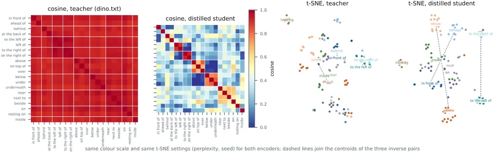
UniPart: Towards Zero-shot Language-Grounded 3D Part Segmentation for Embodied Interaction
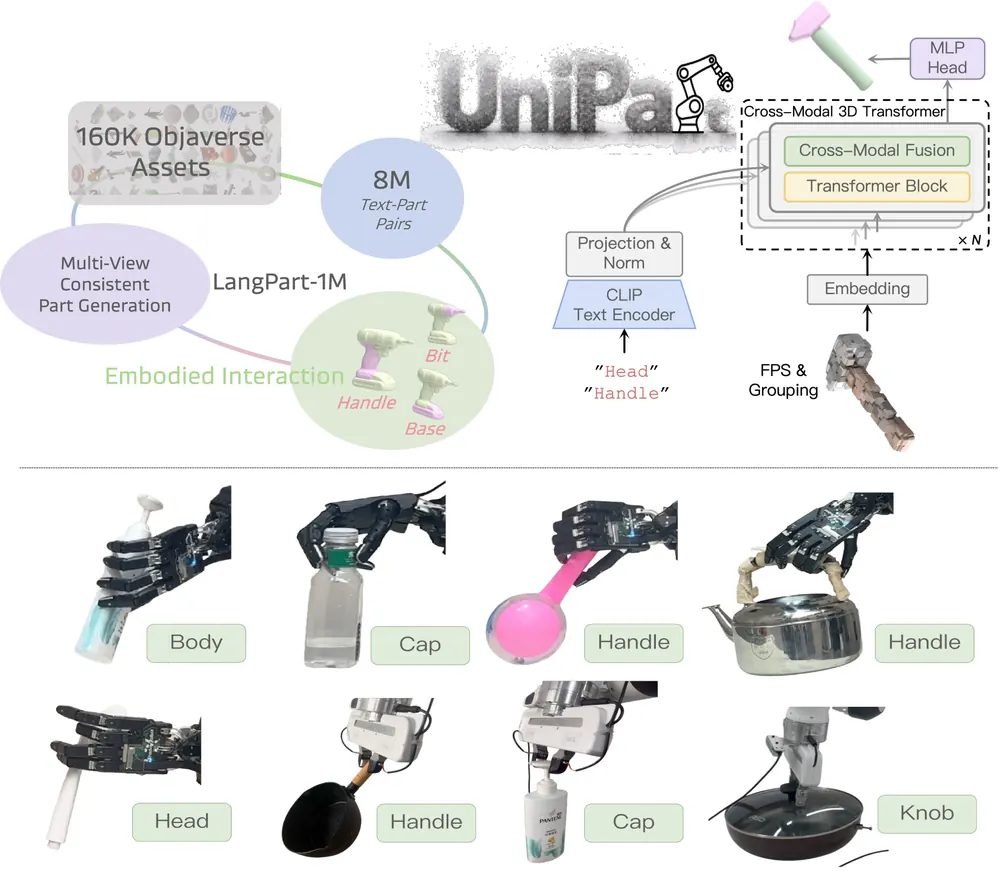
Dynin-Robotics: Omnimodal Unified Diffusion Vision-Language-Action Model
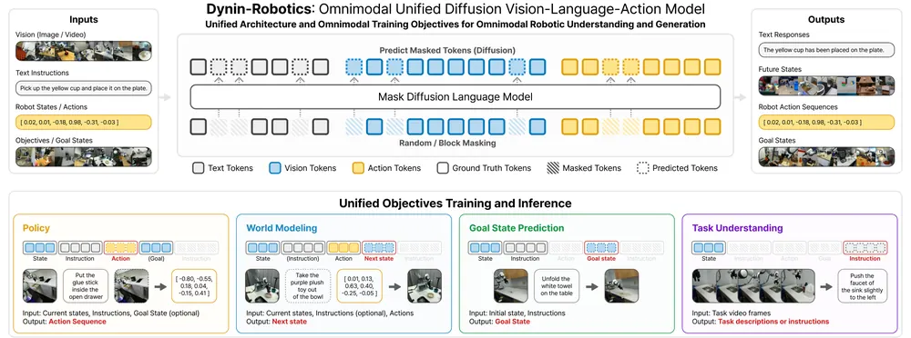
Breaking the Vision-Action Shortcut: Latent Interface Training for Generalizable Robotics Foundation Models
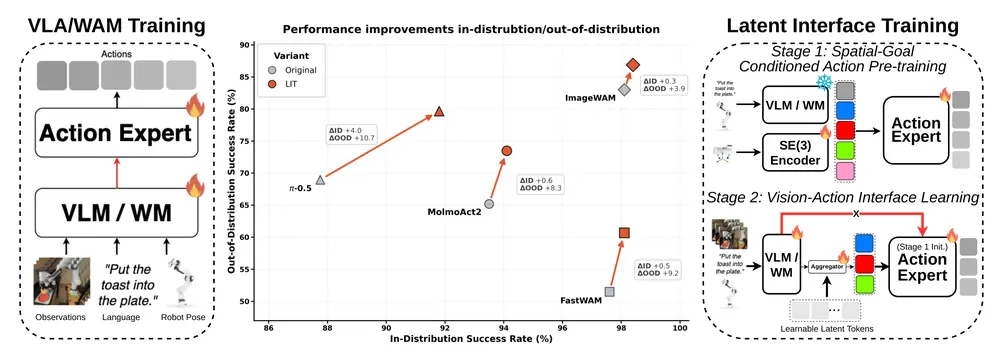
Pelican-Sim 1.0: A General World Model Simulator for Embodied Intelligence
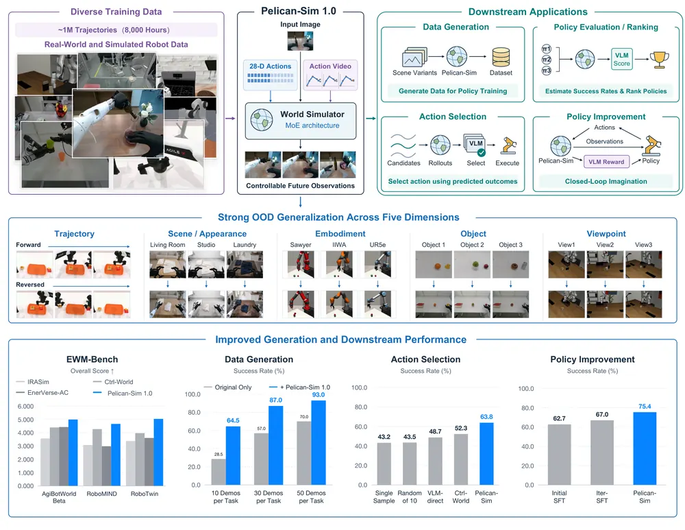
ArtManip: Category-Level Articulated In-Hand Manipulation
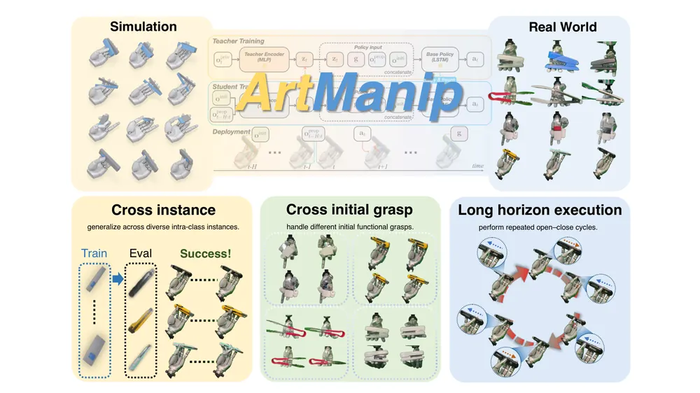
MoPA: Coordinated Mobile Manipulation via Subsystem-Specific Perception Alignment
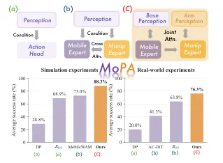
Amortized Low-Rank Adaptation for Model-Based Reinforcement Learning
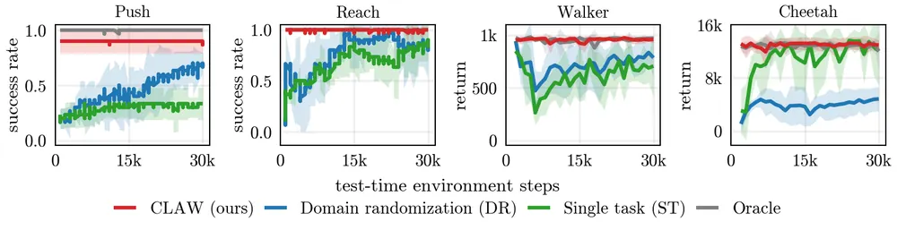
Does Video Memory Use What It Retrieves? A Causal Audit of Memory Specificity
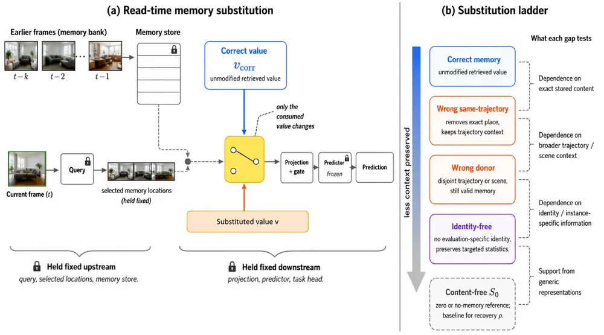
STAR: Sparse Tactile Representation Learning in Vision-Tactile-Language-Action Models for Dexterous Manipulation
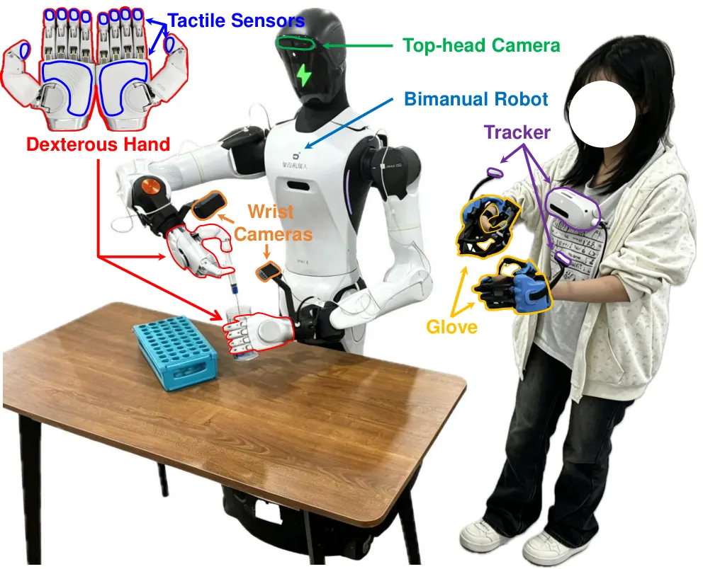
VideoTok4D: A 4D-Aware Video Tokenizer for Compact World Representation
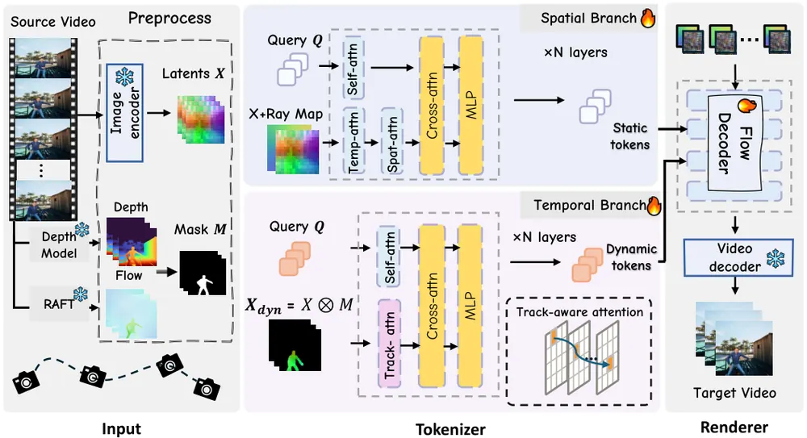
Agent as Policy for Robotic Manipulation
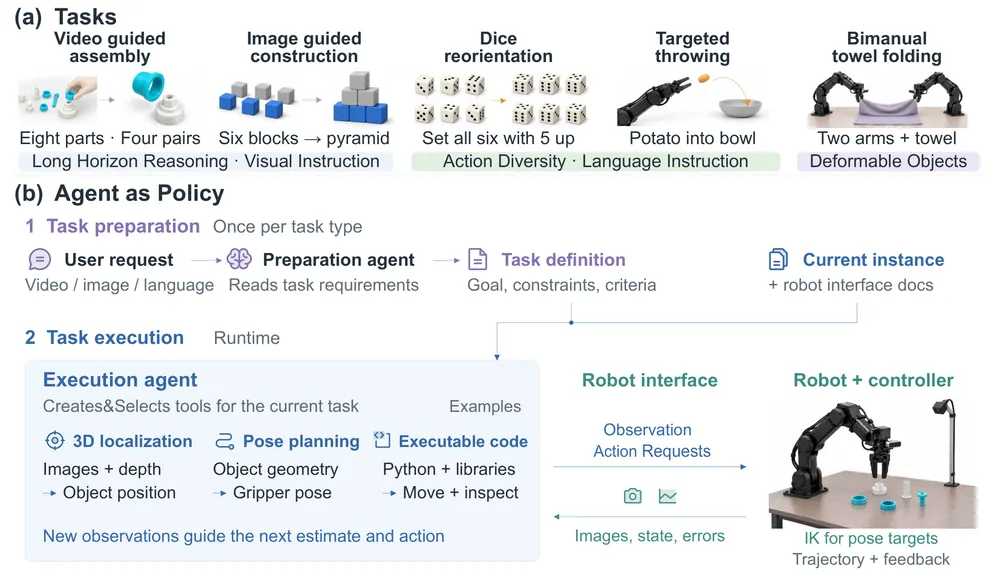
IMPLY: Physically Anchored Consistency for World-Model Rollouts
DWMP: Leveraging Dual World Models for Humanoid Obstacle Traversal
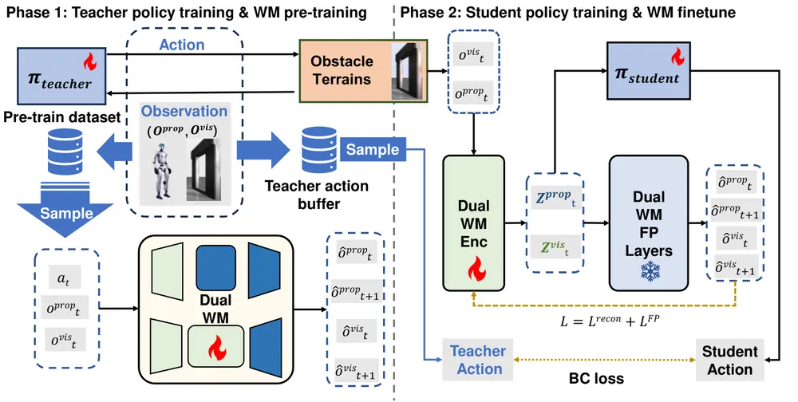
RodForesight: A World Model Enhanced Diffusion Policy for Slender and Material Agnostic Rod Insertion
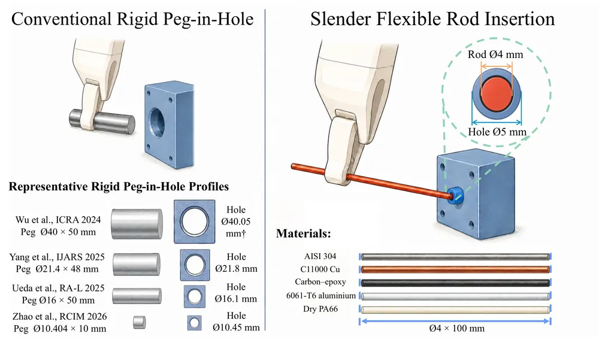
오늘의 핵심 연구 트렌드 종합
- world model을 실행 전 검증기로 쓰는 흐름 — Dynin-Robotics, RodForesight가 공통적으로 world model rollout을 candidate action 재랭킹이나 goal-state 검증에 씀. Pelican-Sim은 같은 world model을 검증이 아니라 학습 데이터를 늘리는 증강기로 씀. IMPLY는 self-consistency만으로는 object-blind world model을 못 잡아낸다는 것을 실험으로 보여 반례를 제시함.
- label 없이 open-vocabulary로 3D/관계를 뽑는 흐름 — UniPart는 물체 라벨 없이 3D part를 언어로 분할하고, RelateAnything은 물체 라벨 없이 region만으로 관계를 예측함. 둘 다 label-free perception primitive를 scene graph·manipulation의 앞단으로 두는 설계임.
- vision-action shortcut·causal confusion 진단 — Breaking the Vision-Action Shortcut이 VLA가 우연한 시각 상관관계로 action을 내는 문제를 counterfactual intervention으로 진단하고 고침. failure detection 연구에서 참고할 진단 기법임.
- 촉각·기억의 특이성(specificity)을 직접 검증하는 흐름 — STAR는 촉각 신호의 희소성을 구조화해 학습에 쓰고, Does Video Memory Use What It Retrieves?는 memory 모델이 실제로 retrieve된 내용을 쓰는지 개입 실험으로 감사함. 두 논문 모두 "그 신호가 정말 쓰이는가"를 직접 검증한다는 공통점이 있음.
- gradient 없는 test-time 적응 — CLAW가 hypernetwork로 world model용 LoRA를 즉석 생성해 gradient step 없이 새 환경에 적응함. 다만 사전에 정의된 환경군 밖으로는 일반화가 안 됨.
- 학습 없이 에이전트를 policy로 쓰는 흐름 — Agent as Policy는 범용 코딩 에이전트를 그대로 로봇 policy로 써서 5개 과제군에서 성공률 80% 이상을 냄. 다만 시행당 20~54분·수십 달러 오버헤드가 있어 실용성보다는 상한선 참고용에 가까움.
유망 연구 방향 및 프로젝트 제안
촉각 기반 실시간 scene graph로 접촉 진단하기 - research question: contact 시점의 sparse tactile 신호로 어느 물체·부품이 접촉했는지를 label 없이 실시간으로 추론할 수 있는가 - 접근·novelty: STAR의 contact gate로 뽑은 active tactile patch를 RelateAnything의 label-free relation predictor에 조건으로 넣어, 접촉 대상-도구 관계를 매 프레임 갱신하는 구조. 기존 tactile learning은 policy 입력으로만 쓰고 scene graph로 연결한 적은 없음 - 왜 지금·경쟁 prior works: STAR는 policy 학습에, RelateAnything은 vision relation에 국한돼 있어 둘을 잇는 시도가 없음. 두 방법 모두 real-time(RelateAnything 20ms/frame) 설계라 결합 가능성이 실제로 있음 - risk·target venue: 촉각 센서 하드웨어(268채널)에 의존적이라 재현성이 낮을 수 있음. real-robot 검증까지 가야 설득력이 생김. target: RSS/ICRA
world model 검증을 dexterous manipulation의 접촉 물성 anchoring으로 확장하기 - research question: IMPLY가 쓰는 물성 anchoring(rollout이 서로 일치하는지가 아니라, 실측한 질량·마찰 값과 일치하는지를 검증 기준으로 삼는 방식)이 단일 box push를 넘어 dexterous in-hand manipulation처럼 복잡한 접촉에서도 self-consistency의 맹점을 잡아낼 수 있는가 - 접근·novelty: calibration probing으로 물성을 추정하는 IMPLY 방식을, 학습된 forward model 기반 anchoring으로 바꿔 ArtManip류 articulated object manipulation에 적용. 시뮬레이터 역산 대신 학습 기반 anchoring이 필요하다는 점이 novelty - 왜 지금·경쟁 prior works: IMPLY 저자도 이 확장을 한계로 명시함. 기존 rollout selection 연구(RodForesight 포함)는 anchoring 없이 rollout 자체의 일치도만 봄 - risk·target venue: anchoring용 forward model 학습이 추가 supervision을 요구해 데이터 비용이 커질 수 있음. target: CoRL
vision-action shortcut 진단을 실행 중(on-line) 신뢰도 신호로 쓰기 - research question: 학습 단계에서 shortcut을 제거하는 것을 넘어, 실행 중에 policy가 shortcut에 의존하는 정도를 실시간으로 스코어링해 실패를 예측할 수 있는가 - 접근·novelty: Breaking the Vision-Action Shortcut의 counterfactual intervention(시각 개입 시 action 변화량 측정)을 학습이 아니라 inference 시점 진단 도구로 재구성 - 왜 지금·경쟁 prior works: 원 논문은 학습 단계 개입만 다룸. 온라인 진단은 별도 문제로 다뤄진 적이 없고, failure detection 연구와 직접 맞닿음 - risk·target venue: 실시간 개입이 제어 주기를 늦출 위험이 있어 latency와 진단 정확도의 trade-off 분석이 필요함. target: ICRA/ICML
gradient-free test-time 적응을 world model에서 VLA policy로 옮기기 - research question: CLAW의 hypernetwork 기반 LoRA 생성을 world model이 아니라 언어 조건 VLA policy 자체에 적용해 domain shift에 즉시 대응할 수 있는가 - 접근·novelty: failure detection 신호(예상 상태와 실제 관측의 괴리)를 hypernetwork 입력으로 써서, 실패가 감지된 순간에만 LoRA를 생성하는 조건부 적응 구조 - 왜 지금·경쟁 prior works: CLAW는 사전에 정의된 locomotion·manipulation 환경군 안에서만 검증돼 open-world 일반화가 빈 자리로 남아 있음 - risk·target venue: distribution 밖 환경에서 hypernetwork가 엉뚱한 adapter를 생성할 위험이 큼. 안전장치 설계가 선행돼야 함. target: NeurIPS/ICLR
memory specificity audit을 robot policy의 long-horizon memory 설계 진단으로 확장하기 - research question: manipulation policy의 memory augmentation이 실제로 특정 과거 episode를 참조하는지, 아니면 generic prior 복구로 성능이 나오는지 구분할 수 있는가 - 접근·novelty: video world model에 적용된 read-time memory substitution(memory를 읽는 시점에 저장된 내용 일부를 다른 값으로 바꿔치기해, 성능 이득이 그 내용 자체에서 오는지를 확인하는 개입 기법)을 long-horizon robot policy에 이식해, memory 의존도를 task별로 정량화 - 왜 지금·경쟁 prior works: 원 연구는 video world model(DINO-WM, SAM 2)에 국한. robot policy의 memory 설계에는 이런 진단 프로토콜이 없어 memory 투자 방향(retrieval 정밀도 vs. representation 안정성)을 결정할 근거가 부족함 - risk·target venue: robot policy는 world model보다 memory 접근 경로가 복잡해 substitution 개입이 어려울 수 있음. target: CoRL
오늘 반드시 읽어야 할 논문
- RelateAnything — object label 없이 region만으로 관계를 예측해 mean recall을 기존 대비 2.3~3.5배 올린, scene graph 실시간 구축의 새 기준점임.
- UniPart — 자유형 언어로 3D part를 zero-shot 분할해 실물 로봇 language-conditioned grasping까지 연결한 결과가 확실함.
- Dynin-Robotics — policy·world model·goal·language를 하나의 discrete token space에 넣고 LIBERO 98.1%, 실로봇 78.4%를 낸 통합 설계임.
- Breaking the Vision-Action Shortcut — VLA의 causal confusion 문제를 4개 아키텍처에서 재현하고 latent interface로 OOD 성능을 최대 16.7%p 올려 진단·해법을 동시에 제시함.
- Pelican-Sim 1.0 — world model을 데이터 증강기로 써서 50 demo에 생성 궤적을 더해 성공률을 70%에서 93%로 올린 구체적 수치가 있음.
- IMPLY — self-consistency가 object-blind world model을 못 잡아낸다는 것(AUROC 0.70)을, 물성을 실측해 검증 기준으로 삼는 anchored 방식(AUROC 1.00)과 대비해 통제 실험으로 명확히 보여 검증 방법론에 경고를 던짐.
- STAR — 268채널 촉각을 spatial·temporal·informational sparsity로 구조화해 4개 실로봇 task 평균 성공률 61%를 낸 학습 레시피임.
- Does Video Memory Use What It Retrieves? — memory 모델군마다 실제 memory 의존 양상이 본질적으로 다르다는 것을 개입 실험으로 보여 memory 설계 전반에 시사점을 줌.
전체 1차 스크리닝 결과 (339편, 점수순) 펼치기
| # | 제목 | 점수 | 🤖 | 분야 | 한 줄 근거 |
|---|---|---|---|---|---|
| 1 | Pelican-Sim 1.0: A General World Model Simulator for Embodied Intelligence | 76 | 9 | World Model | 28차원 통합 action 표현과 sparse MoE로 여러 embodiment를 아우르는 world model을 백만 궤적으로 학습해 정책 성공률을 70%에서 93%로 끌어올림 |
| 2 | Dynin-Robotics: Omnimodal Unified Diffusion Vision-Language-Action Model | 74 | 10 | World Model | 언어·관측·목표·행동을 discrete token으로 통합한 omnimodal diffusion backbone으로 action과 next-observation·goal 예측을 하나의 trajectory model로 학습함. 48개 OXE 데이터셋 사전학습, LIBERO-Plus 일반화, 실로봇 78.4% 성공률까지 강한 증거를 보여 top-tier급 formulation 신규성 있음 |
| 3 | STAR: Sparse Tactile Representation Learning in Vision-Tactile-Language-Action Models for Dexterous Manipulation | 71 | 10 | VLA | vision-tactile-language-action 모델과 200시간 이중팔 데이터셋을 함께 제시함. tactile representation sparsity 문제를 새 학습 레시피로 다뤄 우선 주제와 정합성 높음 |
| 4 | UniPart: Towards Zero-shot Language-Grounded 3D Part Segmentation for Embodied Interaction | 68 | 8 | Manipulation | 자유형 언어 구절로 3D 포인트클라우드의 기능적 부품을 zero-shot 분할하는 feed-forward transformer임. 실물 로봇의 언어 조건 부품 파지까지 검증해 매니퓰레이션 언어 접지 연구에 직접 활용 가능함 |
| 5 | Amortized Low-Rank Adaptation for Model-Based Reinforcement Learning | 68 | 8 | World Model | hypernetwork로 test-time에 LoRA adapter를 생성해 world model을 빠르게 적응시키는 CLAW는 test-time optimization 우선주제와 직결되고 manipulation/locomotion에서 검증함 |
| 6 | RelateAnything: Real-Time Open-Vocabulary Relation Prediction From Any Inputs | 68 | 6 | Embodied AI | 물체 라벨을 입력받지 않고 임의 predicate 어휘로 관계를 예측하는 open-vocabulary scene graph 모델임. scene graph를 태스크에서 분리한 formulation이 새롭고 대규모 데이터·벤치마크를 공개해 semantic mapping에 바로 활용 가능함 |
| 7 | Breaking the Vision-Action Shortcut: Latent Interface Training for Generalizable Robotics Foundation Models | 67 | 10 | VLA | vision-action shortcut 문제를 latent interface로 차단하는 2단계 학습법을 제안함. Pi0.5 등 4개 아키텍처와 실로봇 unseen 조건에서 일관된 향상 보여 formulation 신규성 있음 |
| 8 | MoPA: Coordinated Mobile Manipulation via Subsystem-Specific Perception Alignment | 67 | 9 | Manipulation | base 이동과 arm 조작에 각각 별도 perceptual stream을 두고 flow matching으로 다시 결합한 MoPA는 mobile manipulation의 perception-action 정합 문제를 새로 formulation했고 실로봇 76.3% 성공률로 검증함 |
| 9 | VideoTok4D: A 4D-Aware Video Tokenizer for Compact World Representation | 64 | 6 | World Model | 비디오를 정적/동적 토큰으로 분리하고 궤적 정합 attention을 쓰는 4D-aware 비디오 tokenizer임. compact world representation을 목표로 해 world model 연구와 직결되고 저장량을 크게 줄임 |
| 10 | IMPLY: Physically Anchored Consistency for World-Model Rollouts | 63 | 8 | World Model | world model rollout들이 서로 일치해도 물리적으로 틀린 물체를 상상할 수 있음을 보이고 시뮬레이터 역산으로 물리에 anchoring한 IMPLY는 V-JEPA 2-AC에서 기존 self-consistency 평가의 허점을 드러냄 |
| 11 | DWMP: Leveraging Dual World Models for Humanoid Obstacle Traversal | 61 | 9 | World Model | Koopman 기반 고유수용감각 world model과 RSSM 기반 시각 world model을 분리해 융합한 DWMP는 휴머노이드 장애물 통과에서 실로봇(Unitree G1) 배치까지 검증함 |
| 12 | Agent as Policy for Robotic Manipulation | 60 | 9 | VLA | 범용 LLM 에이전트가 task별 학습 없이 시각 관찰을 해석해 프로그램을 작성하고 실로봇을 직접 구동함. assembly·목표이미지 조립·다이 재정렬·투척·양팔 접기 등 다양한 실조작 과제로 검증해 policy 개념 자체를 재정의하는 신규성 있음 |
| 13 | Does Video Memory Use What It Retrieves? A Causal Audit of Memory Specificity | 60 | 5 | World Model | read-time memory substitution으로 video world model의 memory specificity를 인과적으로 분리해 측정함. world model 해석 방법론으로 로봇 메모리 연구에 참고할 만함 |
| 14 | ArtManip: Category-Level Articulated In-Hand Manipulation | 59 | 9 | Manipulation | 물체 내부 자유도 제어와 파지 안정성을 함께 다루는 category-level articulated in-hand manipulation ArtManip은 절차적 데이터 생성과 2단계 학습으로 12개 실물체에 zero-shot 전이함 |
| 15 | RodForesight: A World Model Enhanced Diffusion Policy for Slender and Material Agnostic Rod Insertion | 58 | 8 | Manipulation | diffusion policy가 생성한 후보 action chunk를 world model로 사전평가해 최적을 고르는 RodForesight는 test-time optimization 아이디어를 봉 삽입 과제에 적용해 성공률을 88.9%에서 96.7%로 높임 |
| 16 | DIA: Denoising Intermediate Advantage for Diffusion Policy Optimization | 58 | 8 | Manipulation | diffusion policy의 denoising 단계별로 별도 value function을 학습해 outer PPO advantage와 결합한 DIA는 fine-tuning시 credit assignment 해상도를 높여 여러 조작 벤치마크에서 일관되게 개선함 |
| 17 | Physics-Aware Video Generation via Agentic Planning and Graph-Guided Optimization | 58 | 5 | World Model | VLM을 에이전트로 써서 운동학·깊이 궤적을 계획하고 object-centric gradient routing으로 test-time 물리 최적화를 하는 비디오 생성 방법임. training-free 물리 인지 test-time optimization이라는 점에서 world model/test-time optimization 주제와 맞닿음 |
| 18 | DATAFARM: Distribution-Aligned Task and Motion Planning for Fine-Tuning Vision-Language-Action Models | 57 | 8 | VLA | TAMP가 만든 궤적이 VLA 사전학습 분포와 어긋나 fine-tuning에 도움이 안 된다는 점을 지적하고 분포를 정렬시킨 DATAFARM은 성공률을 8.3%에서 56.7%로 크게 끌어올림 |
| 19 | ProClosure: Hierarchical Room-Object Assignment using Progressive Boundary Closure from Monocular Video | 56 | 7 | 3D Vision | monocular video에서 room-object 3D scene graph를 구성하는 새 boundary closure 방법으로 HOV-SG 대비 room F1과 object-room ARI를 크게 개선함. scene graph는 우선 주제임 |
| 20 | DRS-VPT: Directly Relocalizing in a Scan with Vision Point Transformers | 56 | 6 | Navigation | 쿼리 이미지와 3D scan을 하나의 feed-forward transformer로 정합해 pose와 point map을 동시에 예측함. 카메라-라이다 캘리브레이션과 실내 재정위를 통합해 로봇 매핑/재정위에 직결됨 |
| 21 | SCQ: Stabilizing Conservative Q-Learning with Sigmoid-Bounded Entropy | 55 | 8 | RL | offline-to-online RL의 entropy 항을 sigmoid로 bound해 학습을 안정화하고 조작·wheeled·quadruped·humanoid 네 종류 실로봇에서 검증한 연구로 실로봇 증거가 강함 |
| 22 | Is Gaussian Splatting Becoming Neural Again? A Taxonomy and Controlled Study of Learned Parameterization | 55 | 5 | 3D Vision | 3DGS의 neural parameterization 방식을 19개 방법으로 분류하고 통제 실험으로 appearance 공유는 이득이나 geometry decoding은 무이득임을 보인 분석 논문으로 object-centric 3D representation 설계에 바로 참고 가능함 |
| 23 | FoldNet++: a Large-Scale Synthetic Dataset for Robotic T-Shirt Folding and Unfolding | 54 | 8 | Manipulation | 6개 embodiment, 12만 에피소드 규모의 티셔츠 접기 합성 데이터셋 FoldNet++는 실환경 미지 옷에서도 90% 이상 성공률을 내는 정책 학습을 뒷받침함 |
| 24 | READ: Learning Risk-Informed Fields for End-to-End Autonomous Driving | 54 | 7 | Navigation | 고전적 safety field를 장면별로 학습되는 미분가능한 risk field로 대체한 READ는 end-to-end 플래너와 VLA 모두에 붙일 수 있는 명시적 표현을 제안함 |
| 25 | Curriculum-Based Adversarial Heterogeneous Agent Reinforcement Learning for Autonomous Quad-Copter Landing in Maritime Settings | 54 | 6 | RL | 해상 조건에서 쿼드콥터를 로봇팔로 포획하는 과제에 curriculum과 adversarial wind agent를 결합한 HARL로 out-of-distribution 일반화를 검증함 |
| 26 | ProactiveBench: Can Streaming Video Models Really Interact Like Humans? | 54 | 4 | Video | 스트리밍 비디오 모델이 언제 반응해야 하는지를 평가하는 ProactiveBench는 embodied agent의 실시간 상호작용 타이밍 문제와 직결됨 |
| 27 | Fixed State, Long Reach: What a Constant-Size Cache Buys Block Diffusion at Scale | 54 | 2 | LG | 블록 확산 언어모델에 상태공간 기반 O(1) 캐시를 도입해 긴 컨텍스트에서 attention 캐시 대비 큰 지연·메모리 이득을 보인 시스템 연구임. 시퀀스 모델 추론 효율화의 새로운 원리이나 로보틱스 직접 적용은 없음 |
| 28 | Pneumatic neurons for soft robots enable inflate-and-fire networks for rhythmic motion | 53 | 7 | Robotics | 생물학적 leaky integrate-and-fire를 본뜬 공압 뉴런으로 중앙 전자제어 없이 소프트로봇 리듬 운동을 만드는 새로운 물리 기반 표현이라 흥미로움 |
| 29 | VS-Splat: Voxel-Selective feed-forward Gaussian Splatting for end-to-end 3D object reconstruction from sparse-views | 52 | 4 | 3D Vision | voxel selection으로 물체 영역에만 Gaussian을 배치하는 feed-forward sparse-view 3D reconstruction 방법임. object-centric 3DGS 방향과 맞닿아 있으나 개선 폭이 점진적임 |
| 30 | Fast and Faithful: Principled Conditional Flow Matching for Inverse Problems | 52 | 2 | Generative | flow matching의 조건부 velocity field를 posterior mean으로 명시적으로 매개변수화해 역문제를 이론적으로 정립한 방법임. NFE를 50배 줄이면서 SOTA를 달성해 일반화 가능한 생성모델 이론으로 평가할 만함 |
| 31 | Certified Safety Curation: Distribution-Free Guarantees for Safe Offline Reinforcement Learning | 50 | 5 | RL | 궤적 비교만으로 안전 임계값을 분포무관하게 인증하는 offline RL 데이터 선별 방법임. RL 안전성 인증이라는 새로운 문제 설정이고 오프라인 RL·모방학습에 적용 가능함 |
| 32 | NOVA-GS: Noise-Aware View-Consistent Gaussian Splatting for Low-Light Novel View Synthesis | 50 | 4 | 3D Vision | 저조도 환경에서 노이즈 인지 denoising과 geometry 최적화를 통합한 3D Gaussian Splatting 방법임. object-centric 3DGS의 견고성 확장이나 로봇 인식 적용 검증은 없음 |
| 33 | AnchorVLN: Geometry-Anchored Vision-Language Grounding Reasoning for Open-Vocabulary Navigation | 47 | 7 | Navigation | VLM이 의미를 제안하고 기하가 거리·방위를 계산하도록 역할을 나눈 AnchorVLN은 open-vocabulary VLN에서 실용적이나 formulation 자체는 규칙 기반 도구 분리에 가까움 |
| 34 | Size Doesn't Matter: Material-State Reinforcement Learning for Excavator Transferable Soil Manipulation | 47 | 6 | RL | material state 조건화 RL로 굴착기 흙 조작을 실기계에서 대규모 검증함(42m 제방 무실패 시공). 실로봇 증거는 강하나 problem formulation 자체는 응용 특화임 |
| 35 | Scenario-Independent Criticality Assessment and Prediction for Vulnerable Road Users in Autonomous Driving | 47 | 5 | Embodied AI | 보행자 등 취약도로자의 criticality를 시나리오 독립적으로 예측해 F1 0.96을 달성했으나 기존 지표 대비 엔지니어링 개선 성격이 강함 |
| 36 | Space as an Interventional Invariant: Cross-Modal Predictive Geometry for Stratified Cities and Em-Spaced Intelligence | 46 | 4 | Embodied AI | 공간을 개입 불변 구조로 정의해 이종 모달리티와 도시 계층을 하나의 예측 기하로 통합하려는 이론적 프레임워크임. embodied spatial reasoning과 맞닿는 야심찬 formulation이나 실험이 합성 데이터에 그쳐 실증력이 약함 |
| 37 | Robust Policy Optimization via Adversarial Importance Sampling | 46 | 4 | RL | 표준 학습 rollout에 importance sampling만으로 worst-case return을 추정하는 Advis는 추가 상호작용 없이 강건성을 얻는 실용적 RL 방법임 |
| 38 | Groupoid-Based Internal State Representations for Reinforcement Learning with Local Symmetries | 46 | 3 | RL | groupoid로 상태별 국소 대칭을 동적으로 발견하는 RL 표현 방법은 고정된 group action 가정을 깬 새로운 표현이라 의미 있음 |
| 39 | Pixel Decodability Is Not a Compression Signal: Causally Evaluating Importance Proxies for Visual KV-Cache Eviction | 46 | 2 | Multimodal | VLM의 시각 KV cache에서 pixel 복원 가능성이 실제 인과적 사용과 무관함을 실험으로 보인 부정적 결과 연구임. KV cache eviction 신호 설계에 방법론적 시사점 있으나 로보틱스 직접 연관은 낮음 |
| 40 | MInTRL: Off-policy Intervention can boost On-policy RL | 46 | 2 | RL | on-policy rollout에 짧은 off-policy 개입을 넣어 탐색 범위를 넓히는 MInTRL은 RL 학습 패러다임 관점에서 일반화 가능성이 있음 |
| 41 | Sampling via Decision-Flow: Training-Free Extraction of Improved Latent Reasoning Paths in Large Language Models | 46 | 1 | NLP | RL 없이 tree search로 LLM의 latent reasoning path를 추출하는 training-free 방법으로 흥미롭지만 로봇 적용은 없음 |
| 42 | Transfer Learning for Evolving Domains | 46 | 1 | LG | domain generalization/adaptation을 하나의 진화하는 trajectory 문제로 통합한 TrED formulation은 새로운 문제 정의라는 점에서 평가할 만함 |
| 43 | Before the Tipping Point: Force-Guided Active Perception for Shape-Agnostic Estimation of 3D Centers of Mass | 45 | 7 | Manipulation | 단일 tipping 실험의 force-angle 측정으로 미지 물체의 3D 무게중심을 추정하는 non-prehensile 방법임. 모든 미지 물체에서 오차 5% 이하로 active perception 우선 주제와 부합함 |
| 44 | Chain-SLAM: Globally Consistent Backend for Multi-Session LiDAR SLAM via Chained Loop Closure | 44 | 7 | 3D Vision | 다중 세션 LiDAR SLAM에서 loop closure를 인접 그래프로 전파해 대규모 global consistency를 확보한 Chain-SLAM은 견고한 시스템 기여지만 학습 패러다임의 새로움은 크지 않음 |
| 45 | Online Material Estimation for Conditioned Diffusion Policy in Shaping Deformable Linear Objects | 44 | 7 | Manipulation | material label 온라인 추정으로 조건화한 diffusion policy로 DLO shaping을 다룸. 실로봇 480개 시연으로 검증했으나 특정 task 위주 기여라 novelty는 제한적임 |
| 46 | Granularity-Adaptive Credit Assignment for Long-Horizon LLM Agent Reinforcement Learning | 44 | 3 | RL | long-horizon LLM agent RL에서 상태별 credit 해상도를 적응적으로 조절하는 GACA는 skill chaining의 credit assignment 문제와 원리적으로 통함 |
| 47 | A Unified and Constrained View of Regularization-Based Robust Reinforcement Learning | 44 | 3 | RL | 정규화 기반 강건 RL 방법들을 KL penalty가 있는 제약 최적화로 통일하고 Lagrange multiplier를 자동 조절한 이론 연구임 |
| 48 | Large Distant Gradients Need Not Be Reliable: reliability-weighted credit assignment for long-horizon autoregressive forecasting | 44 | 2 | LG | 장기 autoregressive rollout에서 거리 먼 gradient의 신뢰도를 가중하는 Internal-DW는 world model rollout 학습에도 원리적으로 적용 가능함 |
| 49 | The Rank the Task Demands: A Causal Rank Law for Matrix Memories Trained on Group Composition | 44 | 1 | LG | matrix memory의 rank recruitment가 group 표현의 최소 차원과 일치함을 인과적으로 보인 탄탄한 이론 연구임 |
| 50 | RunningTensor: Generalizing Linear Attention to Higher-Order Recurrent States | 43 | 1 | LG | linear attention의 recurrent state를 고차 tensor로 일반화해 working memory 용량을 늘린 RunningTensor는 표현력 확장 아이디어로 의미 있음 |
| 51 | Single-Query Person-Centric Bimanual Hand-Object Interaction Detection | 42 | 3 | CV | 다인 상황에서 사람 단위로 양손 물체 상호작용을 하나의 query로 예측하는 person-centric formulation 제안함. hand-object 인식 개선이나 매니퓰레이션 정책과 직결되지는 않음 |
| 52 | Look Before You Leap: Pre-Action Verification for LLM Agents | 42 | 3 | NLP | LLM 에이전트가 행동을 실행하기 전에 결정론적 검증을 거치는 pre-action verification 방법임. 실행 전 검증이라는 아이디어는 실패 예방과 통하나 셸 명령·코드 편집 도메인이라 로봇 행동 검증에는 직접 적용되지 않음 |
| 53 | Online Video Agent Harness for Long Video Understanding | 42 | 2 | Video | 온라인으로 도구를 호출하며 증거를 수집하는 long video 에이전트 하니스임. 적은 컨텍스트로 hour-scale 영상 이해가 가능함을 보였으나 로봇 실환경 적용은 없음 |
| 54 | Improving Imitation Learning Efficiency for Manipulation through Geometric Prior Pretraining | 41 | 7 | Manipulation | 텍스처 없는 기하학적 장면만으로 사전학습해 여러 로봇·실환경으로 전이시키는 imitation learning prior 제안임. 아이디어는 간단하나 로봇 형태 무관 전이가 흥미로움 |
| 55 | Communication-Constrained Multi-Robot Exploration With Adaptive Communication Windows | 41 | 6 | Navigation | 통신 창구 확보 여부를 Vehicle Orienteering Problem으로 판단하는 MACE는 통신 제약 다중로봇 탐사에서 탐사시간을 최대 23% 줄인 견고한 시스템 기여임 |
| 56 | Quantifying the Value of Privileged Information Using a PAC-Bayesian Approach | 41 | 2 | RL | PAC-Bayes로 privileged information의 잠재적 가치를 알고리즘 무관하게 정량화한 이론 연구로 sim2real에서 흔한 privileged state 활용과 관련 있음 |
| 57 | Dual-guided Hierarchical Edge Localization for Large-scale Optimal Transport Across Dimensions | 41 | 1 | LG | dual potential 기반 계층적 edge localization으로 백만 점 규모 optimal transport를 빠르게 푸는 방법이나 로봇 적용은 없음 |
| 58 | Spectral Consistency-Guided Multiview Point Cloud Registration for Low-Overlap Scenes | 40 | 4 | 3D Vision | 저중첩 다중뷰 포인트클라우드 정합을 스펙트럴 일관성으로 가속화하는 non-learning 방법임. SLAM/매핑에 참고할 만하나 로봇 시스템 검증은 없음 |
| 59 | Multimodal Floorplan Encoding: Learning Dense Modality-Invariant Representations | 40 | 4 | 3D Vision | CAD, 래스터, 밀도맵 등 이종 평면도 표현을 공유 latent grid로 정렬하는 인코더임. 실내 지도 정합/검색에 활용 가능해 semantic mapping에 참고할 만함 |
| 60 | Hierarchical Belief Modeling for Zero-Shot Opponent Adaptation in Partially Observable Multi-Agent Navigation | 40 | 4 | Navigation | 부분관측 멀티에이전트 게임에서 계층적 belief modeling과 world model objective로 상대에 zero-shot 적응하는 agent로 navigation·belief tracking 설계가 참고할 만하나 실로봇 검증은 없음 |
| 61 | BlueLM-GUI Technical Report: A Real-Device-Centric Flywheel for Self-Improving Mobile GUI Agents | 40 | 3 | Embodied AI | 35B 모바일 GUI agent를 실기기 rollout으로 학습시키는 산업 규모 flywheel로 real-world grounded RL 설계는 참고할 만하나 로봇 조작과는 다른 도메인임 |
| 62 | Fundamental Dynamical Units for Physics-Informed Structural Inference from Perturbation Time-Series in Networked Systems | 40 | 2 | LG | 신호가 있는 3노드 상호작용 패턴을 기본 단위로 삼아 교란 시계열에서 네트워크 구조를 물리 정보 신경망 ODE로 추론하는 방법임. 인과 구조 추론이라는 점은 흥미로우나 합성 데이터 검증에 그치고 로보틱스와 직접 연관은 없음 |
| 63 | ParaRecover: A Process-Level Benchmark for Error Localization and Recovery in Parallel Tool-Use Agents | 40 | 2 | NLP | 병렬 tool-use agent의 오류 진단·복구를 평가하는 벤치마크로 failure recovery 개념과는 맞닿아 있으나 소프트웨어 agent 대상임 |
| 64 | PLSP (Pre-hoc Liminal Space Profiling): OOD Prediction over Detection -- An Anticipatory Approach for Machine Learning Model Reliability | 40 | 1 | LG | OOD detection을 OOD prediction으로 뒤집은 pre-hoc paradigm 제안이 신선하나 로봇 적용 검증은 없음 |
| 65 | SIMS: Scale-Invariant Merit-Function-Based Scalarization for Multi-Task Learning | 40 | 1 | LG | scale invariance 요구조건에서 로그 변환이 유일하게 유도됨을 증명한 multi-task scalarization 이론으로 일반화 가능한 도구지만 로봇 검증은 없음 |
| 66 | ASTRIL-MPC: Autonomous Traversal Framework of Articulated Tracked Robots with Language-Guided Neural-Kinematic MPC | 39 | 6 | Navigation | 관절형 트랙로봇용 학습 kinematics 모델과 NMPC에 LLM이 가중치를 조정해주는 프레임워크임. 계단 등 접촉 많은 지형에서 성능 향상 있으나 결합 구조 자체는 응용 엔지니어링에 가까움 |
| 67 | Comfort by Construction: Adaptive, Comfort-Bounded Action Spaces for Learned Driving Policies | 39 | 5 | RL | 학습 기반 주행 정책의 comfort bound를 매 step 재이산화하는 적응형 action space 제안임. grid collapse 문제 해결이 흥미롭지만 자율주행 특화 기여임 |
| 68 | Temporal Recurrence Favors Fewer Layers | 39 | 1 | LG | 시간적 recurrence가 최적 compute 배분을 얕은 층 쪽으로 옮긴다는 분석으로 아키텍처 설계에 시사점 있으나 로봇 실험은 없음 |
| 69 | PATH: Continuous Target Sensing among Autonomous Cooperative Drones | 38 | 6 | Robotics | 협력 드론 간 타겟 추적을 3D 포인트와 상대 pose로 넘기는 PATH는 실제 UAV 실험에서 낮은 오차로 검증됐으나 범위가 좁은 시스템 논문임 |
| 70 | Assisted Spatial Cognition Through Vision-Language Models | 38 | 6 | Embodied AI | SLAM3R와 SpatialLM, LLM을 결합해 시각장애인용 3D 공간 인지 내비게이션을 구현한 연구로 embodied spatial reasoning과 직접 연관되나 기존 모듈을 조합한 엔지니어링 통합에 가까움 |
| 71 | Beyond Argmax: A Mechanistic Study of Semantic Retention in Frozen Foundation-Model Composition for Generalized Few-Shot 3D Segmentation | 38 | 2 | 3D Vision | few-shot 3D segmentation에서 frozen foundation model 융합 시 조기 collapse를 진단한 분석 논문임. 3D 인식에 시사점 있으나 새 방법 제안은 아님 |
| 72 | One Skill Does Not Fit All: Automatic Discovery and Taxonomy-Guided Routing of Frame-Selection Skills for Long-Video Question Answering | 38 | 2 | Video | 질문 유형별로 다른 frame-selection skill을 자동 발견하고 라우팅하는 long-video QA 프레임워크임. skill routing 아이디어는 있으나 video QA 도메인에 한정됨 |
| 73 | Benign Loss Landscapes Can Coexist with Worst-Case Hardness | 38 | 0 | LG | tree tensor network의 loss landscape가 benign하면서도 worst-case hardness를 가질 수 있음을 보인 학습이론 논문임 |
| 74 | The Cost of Compression: A Rate-Distortion Limit on Factual Hallucination | 38 | 0 | NLP | 제한된 memory 하에서의 factual hallucination을 rate-distortion 이론으로 정식화한 논문임. 일반화 가능한 이론적 기여지만 로봇 관련성은 없음 |
| 75 | Trajectory Bundle Method in SE(3) for Black-Box Fixed-Wing Aircraft Trajectory Optimization | 37 | 5 | Robotics | SE(3) 상에서 미분 없이 궤적을 최적화하는 bundle method로 보간 오차 상한을 증명한 이론적 제어 논문임 |
| 76 | VertexCBF: Improving Neural Control Barrier Functions via Vertex-Restricted Control Search | 37 | 5 | RL | vertex-restricted tree search로 neural control barrier function을 학습하는 방법. 하드웨어 검증 있으나 안전제어 이론 쪽이라 우선 주제와는 거리 있음 |
| 77 | Offline Reinforcement Learning for Wind Farm Control: A Wind Tunnel Study under Dynamic Wind Directions | 37 | 2 | RL | 풍력발전 요 제어에 offline RL을 실제 풍동 실험으로 검증한 연구로 실물 검증 강도는 있으나 도메인이 로봇 조작과는 다름 |
| 78 | LifeMem: Enabling Lifelong Experience Reuse for LLM Agents | 37 | 2 | Multimodal | LLM 에이전트가 여러 환경의 경험을 클러스터링해 재사용 가능한 skill로 추출하는 lifelong learning 프레임워크임. robot memory·skill chaining과 개념적으로 닿아있으나 텍스트 에이전트 환경 한정 검증임 |
| 79 | Distortion of AI Alignment Revisited: RLHF is a Decent Utilitarian Aligner | 37 | 0 | LG | RLHF의 distortion이 알고리즘 결함이 아니라 분포 불일치 때문임을 이론적으로 보인 alignment 분석 논문임 |
| 80 | Decentralized Evolution of Hexapod Gaits with Independent Leg Controllers | 36 | 6 | Manipulation | hexapod 다리를 독립적으로 진화시켜 중앙 조정 없이 보행을 생성한 연구로 decentralized locomotion에 관련 있으나 Webots sim에 한정되고 방법이 단순 evolutionary 조합임 |
| 81 | KAD-Net: Kinematics-Aware Decoupled Learning for Robust 3D Hand Pose Estimation from a Single Depth Image | 36 | 4 | CV | 깊이 영상 기반 3D 손 자세 추정에서 관절 위상 제약과 2D/depth 분리 학습을 결합한 방법임. 매니퓰레이션 인식에 참고할 만하나 점진적 개선임 |
| 82 | Inverting Self-Triggered Control: Adversarial Reinforcement Learning for Sparse Denial-of-Service Attacks | 36 | 3 | RL | self-triggered 제어기를 무력화하는 최소 재밍 스케줄을 학습하는 적대적 RL 방법임. 쿼드로터 등 제어 시스템에 적용했으나 공격 시나리오 중심이라 로봇 정책 학습과는 결이 다름 |
| 83 | Physics as the label for measuring and correcting materials reasoning in multimodal models | 36 | 2 | Multimodal | 물성 재료 데이터의 물리 법칙을 라벨 없이 검증하는 벤치마크와 self-verification loop 제안함. 물리 일관성 검증 아이디어는 흥미로우나 도메인이 재료과학에 한정됨 |
| 84 | Earth-Agent-Pro: Towards Real-World Full-Chain Earth Observation with Agents | 36 | 2 | Embodied AI | 지구관측 전체 파이프라인을 계획-실행하는 에이전트 프레임워크임. workflow 기반 메모리와 도구 사용 학습은 에이전트 설계에 참고할 만하나 로봇 실환경 검증은 없음 |
| 85 | Can We Trust LLM Judges: A Study of Capability-Dependent Biases and Multi-Judge Ensemble for Bias Calibration | 36 | 1 | NLP | LLM judge의 능력에 따른 편향을 분석하고 오류율 기반 가중 다수결로 보정하는 방법임. LLM 평가 방법론이고 로보틱스와 무관함 |
| 86 | Score-based Outlier Generation via Controlling the Radon-Nikodym Derivative | 36 | 1 | Generative | 로그우도 분포를 직접 제어해 낮은 우도의 이상치를 생성하는 diffusion score 조작 방법임. 생성모델 이론 도구이나 로보틱스와 무관함 |
| 87 | Reinforcement Learning over Patient Trajectories for Clinical Reasoning in EHR Foundation Models | 36 | 1 | RL | EHR foundation model을 trajectory policy로 보고 RL fine-tuning한 접근이나 의료 도메인 특화임 |
| 88 | Soft Symbol Grounding for Prototypical Concepts | 36 | 1 | LG | concept grounding을 Metropolis walk로 재정식화해 task별 loss 설계를 없앤 점이 새로운 학습 paradigm이지만 robotics 적용은 없음 |
| 89 | Embodied-BenchForge: A Closed-Loop Agentic Workflow for Embodied Benchmark Construction | 35 | 4 | Embodied AI | embodied benchmark 구축을 closed-loop agentic workflow로 자동화하고 검증·복구까지 포함한 프레임워크로 embodied AI 연구 인프라에 기여하나 로봇 실물 검증은 없음 |
| 90 | Autonomous Precision Milling of Biological Structures via Generic Anatomical Priors and Active Boundary Perception | 34 | 5 | Manipulation | 수술용 자율 밀링 시스템으로 능동 인식 요소는 있지만 특정 응용 엔지니어링에 가까움. VLA·world model 등 우선 주제와 거리 있음 |
| 91 | Distributed Stochastic Optimal Control for Pattern-Oriented Swarms | 34 | 5 | RL | GRF 기반 stochastic optimal control으로 패턴 형성 스웜을 다루며 15기 쿼드로터 실외 실험까지 수행함. 제어이론 기여이며 우선 주제와는 다소 거리 있음 |
| 92 | LettuceVisSim: A Simulator That Generates Lettuce Image Time-series for Vision-Based Reinforcement Learning | 34 | 3 | RL | 작물 이미지 시계열 시뮬레이터로 vision-based RL 조명 제어 정책을 학습한 proof of concept임. 시뮬레이터-RL 파이프라인은 참고할 만하나 농업 도메인에 국한됨 |
| 93 | EvoRS: On-Policy Self-Evolution of Reward Systems for Open-Ended Reinforcement Learning | 34 | 3 | RL | policy가 reward를 hacking하는 문제를 executable reward DAG를 on-policy로 진화시켜 완화한 연구로 reward design 원리가 robot RL에도 참고될 만함 |
| 94 | CueMem: Cue-Guided Context Reconstruction for Long-Term Conversational Memory | 34 | 2 | Multimodal | memory record를 self-contained evidence가 아닌 retrieval cue로 취급해 대화 맥락을 재구성하는 프레임워크임. robot memory 우선 주제와 개념적으로 닿아있으나 대화 에이전트 한정 검증임 |
| 95 | Beyond Generation and Accuracy: Diagnosing and Enhancing Visual Chain-of-Thought for Geometry Problem Solving | 34 | 2 | Multimodal | 기하 문제에서 visual chain-of-thought의 중간 보조선 품질을 causal하게 진단하는 벤치마크로 embodied spatial reasoning에 참고 가능하나 도메인은 기하 문제풀이임 |
| 96 | Physics-Informed Conformal Prediction: Embedding PDE Consistency into Distribution-Free Uncertainty Quantification for Neural Operators | 34 | 1 | LG | PDE 잔차를 conformal prediction의 nonconformity score에 넣어 분포무관 불확실성 구간을 만드는 방법임. neural operator의 불확실성 정량화 도구로 일반성이 있으나 로보틱스와 무관함 |
| 97 | Behavior Quotient Learning for Low-Rank Adaptation of LLM Agents | 34 | 1 | NLP | LLM agent trajectory를 quotient manifold로 묶어 단일 LoRA로 학습하는 방법으로 소프트웨어 agent 벤치마크에 한정됨 |
| 98 | Physical-State-Guided Diffusion Sampling for Full-Waveform Inversion | 34 | 1 | LG | 물리 상태를 Gaussian bridge로 diffusion prior와 결합하는 지구물리 역산 방법으로 world model의 물리 guidance 아이디어와 유사함 |
| 99 | Guardrailed Meta-Agent Loops: Stress-Testing Policy Pinning, Budget Bounds, and Crash Recovery | 34 | 1 | Robotics | 자기개선 agent 루프의 policy 고정, compute 예산, 장애 복구를 함께 검증하는 테스트베드로 로봇보다는 자율 연구 agent에 가까움 |
| 100 | Representation-based Masked Diffusion Model | 34 | 1 | NLP | text representation으로 전역 의미를 인코딩해 masked diffusion의 병렬 토큰 업데이트를 조율하는 방법임. 생성모델 우선 주제와 약하게 연결되나 언어모델 한정 검증임 |
| 101 | Tasks over Application Manuals: Revealing Gaps in Long-Horizon Procedural Reasoning for Language Models | 34 | 1 | NLP | 수백 페이지 매뉴얼을 따르는 장기 절차적 추론 벤치마크로 GPT-5 기준 정답률이 1~15.5%에 불과함을 보임. long-horizon reasoning의 근본적 한계를 드러내지만 텍스트 도메인 한정임 |
| 102 | $\text{GSF-}χ$: Global Stereochemical Fields for Chiral Graph Transformers | 34 | 0 | 3D Vision | 분자의 키랄성을 반영하는 graph transformer로 이론적으로 정교하나 화학 domain 특화임 |
| 103 | Convergence of Stochastic Gradient Methods under Heavy-Tailed Noise and Hölder Smoothness | 34 | 0 | LG | Hölder smoothness와 heavy-tailed noise 하 SGD/gradient clipping 수렴률을 확장한 최적화 이론 논문임 |
| 104 | Dimension-Corrected Hitting Times for Heavy-Tailed Spectral Emergence in Neural Optimizer Dynamics | 34 | 0 | LG | 신경망 가중치의 heavy-tail 스펙트럼이 나타나는 시점을 hitting-time 법칙으로 모델링한 이론 연구임 |
| 105 | A Full Adam Theorem for Spectral Heavy-Tail Onset | 34 | 0 | LG | Adam의 spectral heavy-tail 등장을 완전히 증명한 이론 논문으로 위 2609.12994의 후속 연구임 |
| 106 | From Transportation to Manipulation: Enabling Grasping in Magnetic Robotics | 33 | 5 | Manipulation | MagLev 시스템 위에서 그리핑까지 가능하게 한 저비용 6자유도 하드웨어 메커니즘 설계 논문임. 니치하지만 새로운 기구 자체는 참신함 |
| 107 | VRL-Bench: Benchmarking agents on computer control tasks under finite trial budgets | 33 | 2 | RL | verbal reinforcement learning의 exploration-exploitation 균형을 다루는 컴퓨터 제어 agent 벤치마크로 test-time 학습 원리는 참고할 만하나 로봇 도메인은 아님 |
| 108 | LatentVerse: A Framework for Understanding Shared and Modality-Specific Information in Multimodal Latent Representations | 33 | 1 | Multimodal | 멀티모달 latent representation을 공유/모달 특이 성분으로 분해해 분석하는 시각화 툴 논문임 |
| 109 | Explanations-Driven Active Feature Acquisition for Algorithmic Recourse | 33 | 0 | LG | algorithmic recourse와 feature acquisition을 explanation 기반으로 결합한 formulation이나 로보틱스와는 무관함 |
| 110 | Where Decoder Cosine Similarity Fails for SAE Feature Flow Discovery | 33 | 0 | NLP | sparse autoencoder의 state-update feature 흐름을 분석하는 해석가능성 연구로 초기 단계임 |
| 111 | CanvasAnneal: Curriculum Reinforcement Learning for Diffusion Language Models | 33 | 0 | RL | teacher reasoning trace를 초기 diffusion canvas에 주입해 diffusion LLM의 RL 탐색 병목을 완화한 curriculum 방법임 |
| 112 | MAxBench: A Multinomial Concept Recovery Benchmark | 33 | 0 | NLP | 다항 개념 표현을 기하학 형태와 무관하게 평가하는 steering 벤치마크로 해석가능성 연구임 |
| 113 | Reading the Whole Heart: Latent-Attention Masked Autoencoders for Multimodal Cardiac Representation Learning | 33 | 0 | Multimodal | ECG·심초음파·흉부영상 등을 latent attention으로 공동 사전학습하는 심장 표현학습 모델임. representation learning 우선 주제와 방법론적으로 닿아있으나 의료 도메인 한정임 |
| 114 | Partition-Invariant Tuning for 3D Scene Understanding | 32 | 3 | 3D Vision | 3D scene 이해에서 serialization partition 변화에 강건한 PEFT 방법 제안함. 파라미터 효율화 위주이고 새로운 표현 학습은 아님 |
| 115 | Context-Aware Causal Gaze Forecasting for Human-Vehicle Interaction During In-Cabin Tracking Dropouts | 32 | 2 | CV | 운전자 시선 추적 유실 구간을 causal하게 예측하는 forecaster 제안함. causal recovery formulation은 흥미로우나 차량 HCI에 국한됨 |
| 116 | UFO: Chain-of-Evaluation for Omni-Condition Alignment in Multi-Modal Image Generation | 32 | 1 | Multimodal | 멀티모달 이미지 생성의 조건 정합성을 평가하는 chain-of-evaluation 벤치마크임. 평가지표 논문으로 로보틱스와 무관함 |
| 117 | Pre-Trained Low-Rank Tensor Decomposition for Multi-Dimensional Image Recovery | 32 | 1 | CV | 사전학습 대형 비전 모델을 텐서 분해에 결합해 다차원 영상 복원을 개선한 방법임. 일반 영상 복원 도메인이고 로보틱스 연관성 낮음 |
| 118 | DCRA: Diffusion-Conditioned Representation Alignment for Robust Time-Series Learning | 32 | 1 | LG | 확산 forward process를 구조화된 손상 스케줄러로 재활용해 시계열 표현을 정렬하는 학습법임. EEG/ECG 표현학습이고 로보틱스와 무관함 |
| 119 | Rank-Efficient LoRA via Joint Tangent-Space Optimization under Isotropic Curvature | 32 | 1 | LG | LoRA의 실제 사용 rank가 optimizer에 좌우됨을 보이고 spectral descent로 rank 활용을 높인 방법임. LLM 파인튜닝 최적화 연구이고 로보틱스와 무관함 |
| 120 | Diffusion Models and Concept Formation | 32 | 1 | LG | diffusion model의 noise level별 mode가 Cobweb의 concept hierarchy와 대응함을 보인 이론적 연구로 representation learning에 통찰을 주나 robotics 적용은 없음 |
| 121 | Certifying Concept Unlearning in Text-to-Image Diffusion Models | 32 | 0 | Generative | text-to-image 확산 모델의 개념 삭제 잔여 위험을 통계적으로 인증하는 프레임워크임. 생성모델 안전성 도메인이고 로보틱스와 무관함 |
| 122 | Type Diversity Enables Transformers to Generalise Compositionally | 31 | 1 | NLP | type diversity가 lexical·structural 조합 일반화를 동등하게 좌우함을 보인 실증 연구임. 표현학습 일반화에 대한 통찰이나 로봇 적용은 없음 |
| 123 | Breaking the Token Ceiling: Distilling Smaller, Stronger Byte Models | 31 | 0 | LG | byte-level 모델 distillation의 scaling 경향을 대규모로 비교한 연구임. 토큰화 방식에 대한 실증 기여지만 로봇과는 무관함 |
| 124 | CoralscapesV2: Panoptic and Fine-Grained Visual Scene Understanding in Coral Reefs | 30 | 3 | CV | 산호초 장면의 panoptic 분할과 어류 인스턴스 마스크를 대규모로 확장한 데이터셋임. 로봇/핸드헬드 영상 활용을 언급하나 생태 모니터링 도메인 특화 벤치마크임 |
| 125 | GLARE: Generative Learning via Adversarial Reward Estimation For Social Dynamics Forecasting | 30 | 1 | NLP | adversarial imitation learning을 회의 대화 생성에 적용한 연구로 IL paradigm 자체는 참고할 만하나 로봇 도메인은 아님 |
| 126 | Geometric-to-Semantic Spherical Transfer Learning for Cortical Sulci Labeling | 30 | 0 | CV | 대규모 비지도 사전학습으로 뇌구 라벨링 데이터 부족 문제를 완화한 의료 영상 논문임 |
| 127 | Quantile-based Loss Filtering for Outlier-Robust Stochastic Gradient Descent | 30 | 0 | LG | 손상된 component가 섞인 finite-sum 최적화에서 quantile 기반으로 outlier를 거르는 SGD 변형 이론 논문임 |
| 128 | Do Influence-Derived Data Perturbations Enable Machine Unlearning? A Controlled Study of Three Plausible Roles | 30 | 0 | LG | influence 기반 machine unlearning 기법을 재현·감사해 원저작의 핵심 주장이 무너짐을 보인 negative result 논문임 |
| 129 | How Good Are Frontier Models at Physics? Expert Re-Grading Reveals Broken Evaluations and Near-Saturation of Leading Benchmarks | 30 | 0 | NLP | 물리학 벤치마크의 낮은 점수 상당수가 채점 오류·오답 정답지 때문임을 전문가 재채점으로 밝힌 연구로 커뮤니티에 유용하나 robotics와는 무관함 |
| 130 | Mission Performance: Automatic and Adaptive Race Pace Progression for Autonomous Racing | 29 | 5 | Robotics | 자율 레이싱카의 구간별 성능을 안전 지표로 점진 상향하는 모듈로 실차 대회에서 검증했으나 학습 기반 새로움은 낮음 |
| 131 | Understanding Whole-Body Robot Teleoperation Strategies Under Diverse Task Objectives and Constraints | 29 | 5 | Robotics | 전신 teleoperation에서 과제 제약에 따른 사람의 제어 전략을 분석한 사용자연구 논문임 |
| 132 | A Physics-Based Closed-Loop Robotic Bioprinting Framework Towards Volumetric Muscle Loss Treatment | 29 | 4 | Robotics | 물리 기반 폐루프 제어로 근육손실 치료용 바이오프린팅 파라미터를 실시간 보정하는 응용 로보틱스 논문임 |
| 133 | LoRA-RC: Reservoir Computing with Low-Rank Adaptation | 29 | 2 | RL | reservoir computing에 low-rank correction을 얹어 안정성을 이론적으로 보장한 control 논문으로 robotics 적용 가능성은 있으나 검증은 Lorenz system뿐임 |
| 134 | Physics-Guided Synthetic High-Frequency Ultrasound Generation for Skin Layer Segmentation | 29 | 1 | CV | 물리 시뮬레이션 기반 합성 초음파로 피부층 분할을 사전학습시킨 sim-to-real 방법론이나 의료영상 도메인임 |
| 135 | Expert-Space Exploration in MoE Reinforcement Learning | 29 | 1 | RL | MoE 라우팅을 교란해 RL rollout 다양성을 확보하는 방법임. RL 방법론 기여지만 LLM reasoning task 한정이고 로봇 적용은 없음 |
| 136 | Residual Vector-based Reconstruction as Long-Context Recall Regardless of Context Window Size | 29 | 1 | NLP | FFN activation의 residual vector로 원문 없이 사실을 재구성해 장문 컨텍스트 메모리를 일정하게 유지하는 기법으로 아이디어는 흥미로우나 robotics 연관성은 낮음 |
| 137 | Tracing and Coordinating Cross-Layer Influence for Multimodal Model Merging | 29 | 1 | Multimodal | 멀티모달 model merging에서 업데이트가 layer를 넘어 전파되는 영향을 Ricci curvature로 추적한 방법으로 아이디어는 있으나 robotics 적용은 없음 |
| 138 | Theoretical Guarantees for One-Shot Magnitude Pruning and Compute-Adaptive Early Exit | 29 | 0 | LG | pruning과 early exit에 대한 이론적 수렴 보장 연구로 경량화 방향이라 우선순위 낮음 |
| 139 | TokenMapper: A Step Toward Interoperable Speech Token Translation | 29 | 0 | Multimodal | 서로 다른 음성 토크나이저 사이를 파형 재합성 없이 직접 변환하는 방법으로 로봇과는 무관함 |
| 140 | SCOPE-OPSD: Fisher-Conditioned Privileged Subspaces for On-Policy Self-Distillation | 29 | 0 | NLP | on-policy self-distillation에 Fisher 기반 privileged subspace를 추가한 LLM 학습 기법 논문임 |
| 141 | Poisson-Corrector Complexity Bounds for Moreau--Yosida Unadjusted Langevin Sampling | 29 | 0 | LG | Moreau-Yosida Langevin 샘플링의 수렴률을 개선한 이론 논문임 |
| 142 | Information-Induced Training Geometry: Exact Reduction, Canonical Completion, and Structured Expressivity | 29 | 0 | LG | 정보 채널이 결정하는 optimizer geometry를 다룬 추상적 리만 기하 이론 논문임 |
| 143 | GAUGE: When Not to Trust LLM-as-a-Judge in User-Simulated Evaluation of Task-Oriented Agents | 29 | 0 | NLP | LLM-as-a-judge 평가의 ranking validity와 construct validity를 분리해 문제점을 실증한 논문임. 평가 방법론 기여지만 로봇 관련성은 없음 |
| 144 | Calibrated Ambiguity in Multimodal Language Models: Humans reach for cultural references, while models describe the picture | 29 | 0 | Multimodal | Dixit 게임으로 멀티모달 언어모델의 의도된 모호성 생성 능력을 인간과 비교함. 모델이 과잉 명세화하고 문화적 참조를 못한다는 흥미로운 발견이지만 로봇과는 무관함 |
| 145 | Harness or Model? Isolating the Harness Effect in Agentic Coding with a Contamination-Controlled Private Suite | 29 | 0 | NLP | 동일 모델에서 harness 차이가 코딩 에이전트 성능에 미치는 영향을 엄격히 통제해 측정한 실증 연구임. 방법론은 탄탄하나 로봇 관련성은 없음 |
| 146 | Implicit Personality Representations in Humans and LLMs | 29 | 0 | NLP | LLM의 내부 trait 표상 구조가 인간 성격 인식 구조와 강하게 일치함을 보인 해석가능성 연구로 흥미로우나 robotics와는 무관함 |
| 147 | K-Bench: A Benchmark for LLM Unlearning in Agentic Deployments | 29 | 0 | NLP | LLM unlearning이 최종 답변만 지웠을 뿐 CoT·tool observation에는 비밀이 남는다는 것을 보인 벤치마크로 평가 방법론 기여가 있으나 robotics와 무관함 |
| 148 | Multi-Objective Agent-Based Model Predictive Controller for Plug-and-Play Vehicle Control | 28 | 4 | Robotics | ADMM으로 다목적 agent-based MPC를 분산화한 차량제어 논문으로 학습 기반이 아닌 고전 제어 엔지니어링임 |
| 149 | Driving Context-guided Model Predictive Planning and Control for Autonomous Car Racing at the Limit and Beyond | 28 | 4 | CV | 레이싱카용 MPC 파이프라인 튜닝 논문으로 IROS accept됐지만 로봇 학습·표현과는 거리 있는 제어 엔지니어링임 |
| 150 | UniMo: Unifying Human and Animal Motion Generation | 28 | 2 | CV | 사람과 동물 모션을 point cloud 기반으로 통합 생성하는 프레임워크와 대규모 데이터셋 제시함. 애니메이션 목적이라 로봇 모션 생성과는 거리 있음 |
| 151 | RA-SOD: Reliability-Aware RGB-T Salient Object Detection under Modality Degradation | 28 | 2 | CV | RGB-열화상 모달리티 열화 상황에서 신뢰도 기반으로 융합하는 salient object detection 프레임워크임. 강건성 개선이나 로봇 시스템 적용은 검증 안 됨 |
| 152 | Decoding Mixture Perception through Computational Modeling of Component Interactions | 28 | 2 | LG | 분자-수용체 반응 곡선을 결합해 혼합 냄새를 인식하는 bio-inspired 딥러닝 프레임워크임. 후각 인식이라는 특수 감각 도메인이고 로보틱스 연관성 낮음 |
| 153 | Adaptive Chemotherapy Control under Tumor Heterogeneity via Reinforcement Learning | 28 | 2 | RL | 종양 이질성 하 항암제 투여를 DRL로 다룬 응용 논문, 방법 자체는 표준 TD3/DQN 적용 수준임 |
| 154 | Feature Recovery for Object Understanding After Irreversible Fire Damage | 28 | 1 | CV | 화재 손상 사물 인식 벤치마크와 특징 복원 모듈 제안함. 도메인이 좁고 로보틱스 연관성 낮음 |
| 155 | OphBiWSSD: Scaling Temporal Action Localization in Ophthalmic Surgeries with Bidirectional Weight-tied State Space Duality | 28 | 1 | CV | 안과 수술 영상의 시간적 행위 인식을 양방향 state space duality로 처리한 논문임. 효율적 아키텍처 제안이나 로보틱스 연관성 낮음 |
| 156 | Bridging Vision Foundation Model Priors with CLIP for Spatial-aware Few-shot Anomaly Detection in Medical Images | 28 | 1 | CV | DINO의 spatial prior를 CLIP에 주입해 의료 영상 few-shot anomaly detection의 병변 위치 정확도를 높인 논문임. 의료 도메인이라 로보틱스와 무관함 |
| 157 | Semantically Aligned Gradient-Driven Context-Preserving Image Editing | 28 | 1 | Multimodal | VLM 기반 미분가능한 semantic verification을 학습에 내장한 instruction 이미지 편집 프레임워크임. 편집 정합성 개선이나 로보틱스와 무관함 |
| 158 | Balancing Emotional Alignment and Semantic Consistency in Image Generation via Reinforcement Learning with Valence-Arousal Anchoring | 28 | 1 | Generative | valence-arousal 조건과 GRPO를 결합해 감정 정렬과 의미 일관성을 균형잡은 이미지 생성 방법임. 생성모델 제어 기법이고 로보틱스와 무관함 |
| 159 | MGAvatar: Mesh-Bound Gaussians for Head Avatar Geometry and Appearance Modeling | 28 | 1 | 3D Vision | 메시에 결속된 Gaussian으로 머리 아바타의 기하와 외형을 모델링한 방법임. 그래픽스 아바타 도메인이고 로보틱스와 무관함 |
| 160 | GUIDE: Generative Utility Inference and Decision Engine | 28 | 1 | LG | 베이지안 적응 샘플링과 규칙 기반 초기화로 사용자 선호를 대화로 추론하는 시스템임. 투자 추천 도메인이고 로보틱스와 무관함 |
| 161 | GTA: Graph Theory Agent and Benchmark for Algorithmic Graph Reasoning with LLMs | 28 | 1 | NLP | 그래프 알고리즘 reasoning agent 벤치마크로 representation selection 아이디어는 있으나 robotics와는 거리가 있음 |
| 162 | Performance, Efficiency and Collapse -- Advantages and Challenges in Offline Post-training of Code LLMs | 28 | 0 | NLP | 코드 생성 LLM의 RL 후처리를 오프라인 데이터만으로 수행할 수 있음을 실증한 연구임. 코드 LLM 도메인이고 로보틱스와 무관함 |
| 163 | Reinforcement Learning for Syndrome Extraction | 28 | 0 | RL | 강화학습과 중요도 샘플링으로 양자 오류정정 syndrome 추출 스케줄을 최적화한 방법임. 양자컴퓨팅 도메인이고 로보틱스와 무관함 |
| 164 | Certified AI Triage of ICU Alarms | 28 | 0 | LG | ICU 알람을 통계적으로 인증된 기준으로 3단계 triage하는 의료 응용 연구임 |
| 165 | Split Conformal Prediction with Label-Shift-Adjusted Bayesian Scores | 28 | 0 | LG | label shift 하 conformal prediction 보정 방법으로 이론적이나 분자 물성 예측에 국한됨 |
| 166 | DU-NO: A Parameter-Efficient Double U-Shaped Neural Operator for Phase-Resolving Wave Modeling | 28 | 0 | LG | 파도 시뮬레이션용 경량 neural operator로 파라미터 효율은 좋으나 robotics와 무관하고 PDE 벤치마크 개선에 그침 |
| 167 | Scaling Clinical Judgment to Evaluate Medical AI | 28 | 0 | NLP | 물리학 전공의 판단을 LoRA로 모사한 평가 모델로 의료 LLM 연구 재현에 쓰이나 robotics와 무관함 |
| 168 | A Deployable Architecture for Robot-Mediated Tasks (DART): Evaluation in Socially Assistive Robot-Guided Cognitive Behavioral Therapy Exercises | 27 | 5 | Robotics | 저가 사회적 보조로봇을 웹앱·클라우드로 확장한 아키텍처로 CBT 과제 지원 사용자연구 중심임 |
| 169 | Control Architecture for Safe Grasping of Fragile Objects Using a Coarse Position-Controlled Gripper | 27 | 5 | Manipulation | 저가 위치제어 그리퍼용 force/torque 기반 admittance 제어로 취약물체 파지를 다룸. 통상적 제어 엔지니어링 수준임 |
| 170 | Battery-Aware Predictive Trajectory Planning and Control for Multirotors Under Disturbances | 27 | 4 | Robotics | 배터리 상태를 폐루프로 예측에 반영한 멀티로터 궤적계획으로 시뮬레이션 위주의 엔지니어링 기여임 |
| 171 | Robust Underwater Grasping of Sloped Objects with a Waterproof Passive Adaptive Gripper | 27 | 4 | Manipulation | 방수 수동형 그리퍼로 수중 경사 물체 파지를 개선한 하드웨어 설계 논문이며 학습적 기여는 없음 |
| 172 | Uncertainty-Aware Conflict Detection Against Operator-Conditioned Weather Hazards | 27 | 3 | Navigation | 기상 위험을 고려한 항공기 비행계획 충돌 탐지 프레임워크로 항공교통 도메인 엔지니어링 논문임 |
| 173 | AIM: A Privacy-Aware Interoperable Memory Framework for Multi-Agent Multi-User LLM Systems | 27 | 2 | Multimodal | multi-agent multi-user LLM을 위한 privacy-aware memory framework로 robot memory에 참고될 여지는 있으나 embodied 실험은 없음 |
| 174 | LifeFuse-Mem: Lifecycle-Aware State Fusion Against Temporary Overwriting for Long-Term Memory | 27 | 2 | NLP | lifecycle metadata로 durable/transient 정보를 분리해 memory overwrite를 줄인 연구로 robot memory에 아이디어는 줄 수 있으나 텍스트 agent 벤치마크에 국한됨 |
| 175 | Write on Paper and Get the Online Digital Trace:\newline A New Era for Handwriting | 27 | 1 | LG | 일반 종이 위 필기를 센서 펜과 AI로 디지털화하는 하드웨어 응용 연구임 |
| 176 | Chopthin-Consensus Power Sampling: A Diversity-Preserving Approach to LLM Decoding | 27 | 1 | LG | SMC 기반 LLM decoding에서 Chopthin resampler로 경로 다양성을 보존하는 방법임. inference-time 기법이나 로봇 test-time optimization과는 다른 맥락임 |
| 177 | Beyond the Query: Do Retrieval Signals Improve Adaptive Multimodal RAG Routing? | 27 | 0 | Multimodal | adaptive RAG에서 retrieval 신호가 routing에 실제로 도움이 안 됨을 보인 negative result 논문임 |
| 178 | SAGE-Loop: Reliable Closed-Loop LLM-Driven AutoML with Trial-and-Correction and Adaptive Ensembling | 27 | 0 | LG | LLM 기반 AutoML 파이프라인에 trial-correction 루프를 추가한 시스템 엔지니어링 논문임 |
| 179 | Correlation-Guided Fast Machine Unlearning via Hessian Analysis | 27 | 0 | LG | Hessian 상관성을 이용해 machine unlearning 속도를 82배 높인 보안 응용 논문임 |
| 180 | Explaining Time Series Forecasting with Horizon-Resolved Attribution | 27 | 0 | LG | 시계열 예측에서 예측 시점마다 다른 attribution을 부여하는 설명가능성 방법론 논문임 |
| 181 | GenOR-Twin: A Semantic Middleware for Integrating Operational Discourse with Mathematical Optimization | 27 | 0 | LG | LLM을 semantic translator로 써서 운영 로그를 최적화 제약으로 변환하는 digital twin 미들웨어 논문임 |
| 182 | MCRL2: Multi-resource Cross-attention-based Representation Learning-augmented Reinforcement Learning for Cloud Microservice Scheduling | 27 | 0 | RL | 클라우드 마이크로서비스 스케줄링에 cross-attention 표현학습을 결합한 RL 응용 논문임 |
| 183 | SAS: Simple Attention Sparsification via End-to-End Optimization of Context Ranking | 27 | 0 | LG | language modeling loss로 context ranking을 end-to-end 최적화하는 sparse attention 기법이며 LLM 효율화에 국한됨 |
| 184 | From Collaboration to Capability: Internalizing Routed LLM Experts into Compact Reasoners | 27 | 0 | NLP | controller가 외부 expert의 reasoning을 내재화해 expert 제거 후에도 성능을 유지하는 RL 증류 기법으로 수학 reasoning에 국한됨 |
| 185 | A Data-Driven Distributed Control Scheme: Learning Multi-Objective Agent-Based MPC for Path-Tracking | 26 | 4 | Robotics | 학습 기반 초기화로 다목적 AMPC의 수렴을 가속한 경로추종 제어 논문으로 2024년 학회 발표작임 |
| 186 | Input Resolution Matters: Real-Time Object Detection Latency | 26 | 3 | CV | 입력 해상도에 따른 객체 탐지 지연을 확률분포로 모델링한 연구임. 엣지 디바이스 지연 분석이라 실시간 로봇 인식에 참고할 만하나 새 방법론은 아님 |
| 187 | RoES: Rotational Equivariant Selective-frequency Fusion for Multimodal Images | 26 | 2 | CV | 적외선-가시광 융합에서 저주파/고주파를 분리해 회전 등변성을 선택적으로 적용한 방법임. 센서 퓨전 개선이나 로보틱스 시스템 검증 없음 |
| 188 | QuPAINT: Physics-Aware Multimodal Reasoning for Quantum Material Characterization | 26 | 1 | Multimodal | 2D 양자 물질 현미경 영상에 물리 정보를 주입한 멀티모달 프레임워크임. 도메인 특화적이고 로보틱스 연관성 낮음 |
| 189 | SCORE: SubDistribution-aware Collaborative Knowledge Reinforcing for Cloth-Hybrid Lifelong Person Re-Identification | 26 | 1 | CV | 옷차림이 섞인 시나리오에서 lifelong person re-id의 catastrophic forgetting을 subdistribution 모델링으로 완화한 방법임. 감시 도메인이고 로보틱스 연관성 낮음 |
| 190 | GRACE: Adaptive Concept Erasure with Geometry-Guided Retention in Diffusion Models | 26 | 1 | Generative | 확산 모델의 민감 개념을 subspace 제약으로 국소적으로 지우는 concept erasure 방법임. 생성모델 안전성 도메인이고 로보틱스와 무관함 |
| 191 | DementiaCare-Bench: A Modality-Validated Video Benchmark | 26 | 1 | Video | 치매 돌봄 행동을 다루는 VLM 비디오 벤치마크와 LoRA 파인튜닝 결과임. 의료·돌봄 도메인이고 로보틱스와 무관함 |
| 192 | Generative Retrieval for Unsupervised Text-Based Person Search | 26 | 1 | Multimodal | 라벨 없는 이미지만으로 텍스트 기반 사람 검색을 하는 generation-then-retrieval 프레임워크임. 감시 검색 도메인이고 로보틱스와 무관함 |
| 193 | 3D Digital Twin Visualization of Multiclass GRF-Based Gait Disorder Classification | 26 | 1 | CV | 지면반력 신호로 보행장애를 분류하고 3D로 시각화한 응용 논문으로 방법론적 새로움은 낮음 |
| 194 | Scalable Discrete-to-Continuous Channel Simulation for Compression and Privacy | 26 | 0 | LG | 고정된 수의 난수 샘플만으로 이산-연속 채널 시뮬레이션을 하는 압축·프라이버시 기법임. 정보이론 도메인이고 로보틱스와 무관함 |
| 195 | Almost Sure Convergence Analysis of Stochastic Gradient Methods with Clipping and Additive Noise | 26 | 0 | LG | gradient clipping과 노이즈가 있는 SGD의 거의 확실한 수렴성을 증명한 이론 논문임. 최적화 이론이고 로보틱스와 무관함 |
| 196 | When Connected Does Not Mean Similar: Charting the Homophily Boundary of SNAP-KG for Streaming Entity Integration | 26 | 0 | LG | 지식그래프 클러스터링 방법의 homophily 가정 한계를 분석한 벤치마킹 논문임 |
| 197 | RiPPLE: Cross-Space Performance Prediction from Early Training for Neural Architecture Search | 26 | 0 | LG | NAS를 위한 early-training 기반 순위 예측 방법으로 효율화 성격의 엔지니어링 논문임 |
| 198 | Optimizing for the decision not the prediction: an exploration of Smooth Net Benefit as a training objective | 26 | 0 | LG | 임상 의사결정 임계값에 맞춘 미분가능한 net benefit 학습목표를 제안했으나 일관된 개선은 확인되지 않음 |
| 199 | T-GADE: Thermodynamical Generative-AI-Driven Evolution of LLM Artifacts | 26 | 0 | LG | 열역학적 진화 알고리즘으로 LLM artifact 다양성을 조절한 연구로 bin-packing 개선폭이 작고 robotics와 무관함 |
| 200 | Autonomous Research for Open-Ended Problems: A Case Study on Telecom Ticket Retrieval | 25 | 1 | LG | 통신 티켓 검색이라는 open-ended 문제에 autonomous ML research를 적용해 SOTA의 90%를 훨씬 짧은 기간에 도달했으나 robotics와는 무관함 |
| 201 | Can LLMs in Draft-Verify-Revise Pipelines Resolve Deictic Ambiguity? | 25 | 0 | NLP | draft-verify-revise 파이프라인에서 지시대상 해석이 단계별로 바뀌는 현상을 분석한 연구로 robotics 적용성은 없음 |
| 202 | A Hierarchical Coverage Path Planning Algorithm for Unknown Environments | 24 | 4 | Navigation | 미지 환경 커버리지 경로 계획의 계층적 알고리즘 제안이나 시뮬레이션 baseline 비교 수준의 점진적 개선임 |
| 203 | An Automated Thickness Evaluation Procedure Using an Integrated Structured Light 3D Camera in a Robotic Bioprinting Framework | 24 | 3 | Robotics | 구조광 3D 카메라로 바이오프린팅 결과물 두께를 자동 측정하는 비전 시스템 논문임 |
| 204 | Affective Agent: On-Device Personalized Intervention Reasoning for Wearable Systems | 24 | 2 | Embodied AI | 웨어러블 온디바이스 개입 판단 아키텍처로 physiological reasoning 구조는 있으나 시뮬레이터 생성 시나리오 평가에 그침 |
| 205 | MPT: Missing Prototype Tracking via Barycentric Reconstruction in Vehicular Federated Learning | 24 | 2 | CV | 차량 federated learning에서 이탈 차량이 가져간 rare class prototype을 barycentric 분해로 복원하는 기법으로 자율주행 perception에 참고될 수 있으나 기여가 좁은 엔지니어링임 |
| 206 | EgoMaize: A First-Person Maize Instance Segmentation Benchmark under Severe Field Occlusion | 24 | 1 | CV | 1인칭 시점 옥수수 개체 분할 벤치마크임. 농업 도메인 특화이고 로보틱스 연관성 낮음 |
| 207 | 3D CT-to-PET Translation via Latent Brownian Bridge Diffusion | 24 | 0 | Generative | 잠재공간 Brownian Bridge diffusion으로 CT를 PET로 변환하는 방법임. 의료 영상 도메인이고 로보틱스와 무관함 |
| 208 | Predicting Collision Cross Sections with GRACE: Geometric Residual Adduct Conditioning via Early-fusion | 24 | 0 | LG | 질량분석 CCS 예측용 encoder adaptation으로 특정 domain fine-tuning 성격이 강함 |
| 209 | Simulating Disengaged Students to Evaluate LLM-based Tutors | 24 | 0 | NLP | 비참여 학생 시뮬레이터로 AI 튜터를 평가하는 교육 응용 연구임 |
| 210 | Observation-Anchored Selective Assimilation for Longitudinal Tumor-State Proxy Forecasting in Post-Treatment Glioma | 24 | 0 | CV | 교모세포종 치료 후 MRI 기반 종양 상태를 예측하는 의료 영상 응용 연구임 |
| 211 | Clustering-Based Balanced Sampling and Allocation with Data Parallelism for High-Performance Fine-Tuning | 24 | 0 | LG | instruction tuning 데이터의 클러스터 기반 균형 샘플링으로 학습 시간을 줄이는 효율화 논문임 |
| 212 | InRTL: Effective Intra-Inter Interaction Learning for Relational Tables | 24 | 0 | LG | PK-FK로 연결된 관계형 테이블 간 상호작용을 모델링하는 tabular learning 논문임 |
| 213 | What an odour descriptor corpus can and cannot measure: valence, attenuation, and the ceiling of the public record | 24 | 0 | LG | 후각 descriptor corpus 간 불일치를 감정가(valence) 결핍으로 설명하는 심리물리학 데이터 분석 논문임 |
| 214 | DynSHAP: Towards Explainable Dynamic Survival Analysis | 24 | 0 | LG | 동적 생존분석 모델에 SHAP을 확장 적용한 의료 설명가능성 논문임 |
| 215 | Local Edits, Global Ripples: Replay-Informed Policy Adaptation for Workflow Synthesis | 24 | 0 | NLP | 워크플로우 합성 에이전트의 prompt-policy 편집이 다른 부분에 미치는 파급효과를 다루는 방법론임. LLM 에이전트 한정 기여로 로봇과는 거리 있음 |
| 216 | SynthSentry: Detecting Synthetic Data Contamination in Language Model Training Data | 24 | 0 | NLP | 합성 데이터 오염을 사전학습 전에 탐지하는 corpus 스크리닝 지표를 제안함. 실용적이나 로봇 관련성은 없음 |
| 217 | Language Is an Insufficient Substrate for Quantitative Reasoning, and Consequential Domains Need Large Quantitative Models | 24 | 0 | NLP | 언어모델이 정량적 의사결정에 부적합하다며 Large Quantitative Model 개념을 제안하는 포지션 논문으로 실증 실험은 없음 |
| 218 | When Successful Knowledge Graph Edits Displace Correct Answers: Rank-Level Locality beyond Parameter Support | 24 | 0 | NLP | 지식그래프 편집이 정답 순위를 밀어내는 현상을 감사한 연구로 흥미롭지만 robotics와 무관한 좁은 주제임 |
| 219 | A Multi-Vehicle Dataset with Camera, LiDAR, and Radar Sensors and Scanned 3D Models for Custom Auto-Annotation using RTK-GNSS | 23 | 3 | CV | 카메라·라이다·레이더와 스캔된 3D 차량 모델을 결합한 자율주행 데이터셋 논문으로 방법론 novelty는 없음 |
| 220 | Aligned Radiometric RGB-Thermal Fusion for UAV Facade Anomaly Screening | 22 | 2 | CV | UAV 외벽 점검용 RGB-열화상 정합 및 융합 파이프라인과 데이터셋임. 점검 도메인 특화이고 로보틱스 연관성 낮음 |
| 221 | HSI-Road Relabeled: Surface-Aware Road-Scene Segmentation | 22 | 1 | CV | HSI-Road에 표면 클래스 라벨을 추가한 데이터셋 논문임. 도로 표면 인식에 국한되고 로보틱스 연관성 낮음 |
| 222 | GSO-Net: Visual State Machines for Hazardous Freight Transfer Compliance at Petrochemical Logistics Nodes | 22 | 1 | CV | 위험물 하역 현장의 SOP 준수를 감시하는 비전 벤치마크임. 산업 모니터링에 국한되고 로보틱스 연관성 낮음 |
| 223 | PhysioAI: Clinical Knowledge-Guided Semantic Supervision for Skeleton-Based Physiotherapy Action Recognition | 22 | 1 | CV | 임상 지식을 CLIP 앵커로 주입한 물리치료 동작 인식 프레임워크임. 재활 도메인 특화이고 로보틱스 연관성 낮음 |
| 224 | ChitraMiti: Benchmarking Visual Grounding and Modality Reliance in Bengali Geometric Reasoning | 22 | 1 | Multimodal | 벵골어 기하 문제에서 VLM의 modality reliance를 진단하는 벤치마크임. 저자원 언어 멀티모달 평가이고 로보틱스와 무관함 |
| 225 | ExpertHTR: Unified Handwritten Text Recognition with Multi-Task Learning and Sparse Mixture-of-Experts | 22 | 1 | CV | 이질적 필기 인식 데이터셋을 통합 학습하기 위한 sparse MoE 프레임워크임. OCR 태스크이고 로보틱스와 무관함 |
| 226 | Hybrid Physics-AI Framework of Body Center of Mass Dynamics from Wrist-Worn Sensors | 22 | 1 | LG | 손목 IMU로 신체 중심 가속도를 추정하는 하이브리드 physics-AI 모델로 웨어러블 헬스케어에 국한되고 robotics 연관성은 낮음 |
| 227 | Niching Agents in The Core | 22 | 1 | RL | 경쟁적 co-evolution agent를 sub-환경별로 niching한 게임 AI 연구로 로봇 실험은 없음 |
| 228 | Same Encoder, Different Winner: A Paired-View Framework for Cell Painting Encoder Evaluation | 22 | 0 | CV | Cell Painting 인코더 평가가 프로토콜에 따라 순위가 뒤바뀜을 보인 진단 연구임. 생물영상 도메인이고 로보틱스와 무관함 |
| 229 | Beyond Accuracy: Uncertainty-Guided Boundary Refinement for Reliable Biomedical Image Segmentation | 22 | 0 | CV | 불확실성 기반 게이트로 생체 영상 분할의 경계를 정제하는 2단계 프레임워크임. 의료 영상 도메인이고 로보틱스와 무관함 |
| 230 | SV-Cine: Diagnosis-Conditioned Segmentation of Single Ventricle Physiology via Generative Data Augmentation | 22 | 0 | CV | 단심실 기형 심장 MRI 분할을 진단 조건부 파운데이션 모델 적응으로 개선한 방법임. 의료 영상 도메인이고 로보틱스와 무관함 |
| 231 | Unified CT and MRI Pancreas Segmentation for Label-Efficient Cross-Modality Subregion Transfer | 22 | 0 | CV | CT/MRI 이종 모달리티에서 도메인 적대 학습으로 췌장을 분할하고 하위 영역까지 라벨 효율적으로 전이한 방법임. 의료 영상 도메인이고 로보틱스와 무관함 |
| 232 | Fed-Equilibrium Framework for Topological Pareto Control in Robust and Fair Clinical Federated Learning | 22 | 0 | LG | 다기관 임상 연합학습에서 소수 기관의 지식이 묻히는 문제를 두 단계 gradient 제어로 완화한 프레임워크임. 의료 연합학습 도메인이고 로보틱스와 무관함 |
| 233 | Explainable Prediction from Mobile Sensing Data through LLM-guided Concept Integration | 22 | 0 | LG | LLM이 생성한 개념 이상치 타겟으로 모바일 센싱 예측을 설명 가능하게 만든 방법임. 헬스 센싱 도메인이고 로보틱스와 무관함 |
| 234 | Cognition on Graph: Navigating Massive Knowledge Space via Cognitive Cycles and Bidirectional Graph-Text Synergy | 22 | 0 | NLP | 그래프와 텍스트 간 양방향 시너지를 활용하는 training-free RAG 탐색 프레임워크로 multi-hop QA 응용임 |
| 235 | Learning Symbolic Constraint Representations from Examples: A Neuro-Symbolic Approach | 22 | 0 | AI | 제약 학습을 neural oracle로 대체해 human query 수를 줄인 연구로 조합 최적화 도메인에 국한됨 |
| 236 | SoK: Rethinking Jailbreaking in the Era of Agentic AI: Attacks, Defenses, and Practical Consideration | 22 | 0 | NLP | agentic AI 시대의 jailbreak 공격·방어를 체계화한 SoK 논문으로 robotics와는 무관한 안전성 서베이임 |
| 237 | When Rubrics Fail: Hallucinations Reveal Blind Spots in Medical AI Evaluation | 22 | 0 | NLP | medical LLM 평가용 rubric이 임상적으로 중요한 hallucination을 놓친다는 것을 보인 연구로 robotics와 무관함 |
| 238 | Interpreting the predictions of neural network classification based on a Taylor Coefficient Analysis (TCA) | 22 | 0 | LG | Taylor 전개로 분류기 입력 feature의 기여도를 해석하는 방법으로 CERN 데이터에 적용했고 robotics와는 무관함 |
| 239 | Rethinking Heterogeneous System Disaggregation for Subquadratic Attention | 22 | 0 | LG | subquadratic attention LLM serving을 위한 이기종 시스템 disaggregation 기법으로 효율화는 되나 robotics 문제에 새 원리를 제공하지 않음 |
| 240 | Global Path Planner with Multi-Model Switching | 21 | 4 | Navigation | 지형별 kinematic model을 실시간 전환하는 pure-pursuit 기반 경로 추종기로 baseline 대비 점진적 개선 수준임 |
| 241 | Parameter Sensitivity Analysis for Aerial LiDAR-Inertial Odometries in low-altitude flights | 21 | 3 | Navigation | FAST-LIO2와 Cartographer 파라미터 민감도를 실험적으로 분석한 튜닝 가이드 논문이라 개념적 기여는 낮음 |
| 242 | Quality-Constrained Routing over a Fixed Pool of Quantized Mixture-of-Experts Instances | 21 | 0 | LG | 양자화된 MoE 인스턴스 풀에서의 라우팅 최적화로 서빙 효율화 논문임 |
| 243 | Attention Quantization for Tabular Foundation Models | 21 | 0 | LG | tabular foundation model의 attention을 FP8로 양자화해 추론을 가속하는 효율화 논문임 |
| 244 | R2VC: Modular Fact-Checking with Retrieval, Verification, and Confidence Calibration | 21 | 0 | NLP | 검색·검증·보정을 분리한 모듈형 fact-checking 파이프라인 논문으로 로봇 학습과 무관함 |
| 245 | Judging by the Cover: Cleaning LLM Truthfulness Benchmarks to Avoid Surface-Level Feature Leakage | 21 | 0 | NLP | TruthfulQA 등에서 표면적 특징으로 정답을 맞히는 leakage를 탐지·제거하는 벤치마크 정제 방법임 |
| 246 | Occamy-1.0: Open Pareto-frontier 35B Intelligence for Co-work | 21 | 0 | LG | co-work 에이전트용 35B 비용효율 모델 공개 논문으로 post-training 엔지니어링 기여임 |
| 247 | Competence-Gated Pooling of Language Models and Priors for Event Forecasting | 21 | 0 | LG | 언어모델과 외부 예측을 competence 기반으로 결합하는 이벤트 예측 방법으로 예측 시장 응용 연구임 |
| 248 | Toward Robust Personalized Alignment for LLMs: Mitigating Persona Drift in Multi-Turn Dialogue | 21 | 0 | NLP | 장기 대화에서 persona drift를 억제하는 belief revision 기법으로 robotics와 무관한 개인화 대화 연구임 |
| 249 | Reproducing and Evaluating the Generalizability of Subliminal Learning in Open-Weight Models | 21 | 0 | NLP | subliminal learning 재현 연구로 오픈웨이트 모델에서 효과가 trait·task마다 다름을 보였으나 robotics와 무관함 |
| 250 | SteerDuplex: Steerable Duplex Speech Dialogue Models | 21 | 0 | NLP | duplex 음성 대화 모델의 tone·persona steerability를 다루는 연구로 robotics와 무관함 |
| 251 | MedRoundsQA: A Persona and Difficulty Aware Evaluation for Multi-Turn Medical Consultations | 21 | 0 | NLP | 다중턴 의료 상담 벤치마크로 turn 수 증가에 따른 진단 정확도 포화를 보였으나 robotics와 무관함 |
| 252 | High-Fidelity Multi-Body Simulator for Autonomous Racing | 20 | 3 | CV | 자율주행 레이싱용 고정밀 다물체 시뮬레이터 인프라 논문으로 학습·알고리즘 novelty는 없음 |
| 253 | LG-PF: Lightweight Confidence-Guided Polarization Image Fusion | 20 | 2 | CV | 편광 영상 융합에서 신뢰도 기반으로 선택적 잔차 전이를 하는 경량 방법임. 센서 퓨전 개선이나 로보틱스 연관성 낮음 |
| 254 | LGFN: Lightweight Gated RGB-Polarization Fusion with Modality-Availability Conditioning for Camouflaged Object Detection | 20 | 2 | CV | RGB와 편광의 가용성에 따라 게이팅하는 경량 위장물체 탐지 프레임워크임. 효율화 위주이고 로보틱스 연관성 낮음 |
| 255 | When Ground-Truth Fidelity Matters: An Orchestrated UAS Framework for Wheat Streak Mosaic Virus Detection Using Vision Transformers and Machine Learning | 20 | 1 | CV | 드론 다분광 영상으로 밀 바이러스 진단하는 파이프라인임. 라벨 노이즈 문제를 잘 보였으나 로보틱스 연관성 없음 |
| 256 | Revisiting Multi-Object Tracking Baselines: Hyperparameter Optimization with Multi-Fidelity Greedy Coordinate Search | 20 | 1 | CV | MOT 하이퍼파라미터 튜닝 자동화 방법 제안함. 방법론적 새로움보다 엔지니어링 최적화에 가까움 |
| 257 | DERA: Detached Edge-Residual Adaptation for Prohibited item Detection | 20 | 1 | CV | X선 금지물품 탐지에 edge prior를 주입하는 경량 어댑테이션 기법임. 점진적 성능 개선 위주이고 로보틱스 연관성 낮음 |
| 258 | AquaCubeAI-Powered Monitoring Turbidity on-board Φsat-2 | 20 | 1 | CV | 위성 온보드에서 저지연으로 해안 탁도를 추정하는 경량 회귀 모델임. 원격탐사 도메인이고 로보틱스와 무관함 |
| 259 | Label-Guided Knowledge Distillation for 3D-CNNs in Action Recognition | 20 | 1 | CV | 3D-CNN 행동 인식을 위해 라벨 정보로 distillation을 안내하는 방법임. 점진적 압축 기법이고 로보틱스와 무관함 |
| 260 | Toward Reliable Railway-Bogie Response Prediction Using Multifidelity TDNN and Physics-Informed Residual Learning | 20 | 1 | LG | 다중신뢰도 TDNN과 물리 정보 잔차 학습으로 철도 대차 응답을 보정한 방법임. 철도 공학 도메인이고 로보틱스와 무관함 |
| 261 | Estimating Pedestrian Volumes from GIS-Derived Built-Environment Features: A Machine Learning Framework | 20 | 1 | LG | GIS 기반 건조환경 특징으로 보행량을 추정하는 머신러닝 파이프라인임. 도시계획 도메인이고 로보틱스와 무관함 |
| 262 | A Multimodal Explainable Deep Learning Framework for Alzheimer's Disease Diagnosis using 3D Magnetic Resonance Imaging and Clinical Data | 20 | 0 | CV | MRI와 임상 데이터를 결합한 알츠하이머 진단 설명가능 모델임. 의료 도메인이고 로보틱스와 무관함 |
| 263 | Beyond Ambiguous Visual Cues: Studying Physiological Disruptions and Cross-Modal Inconsistencies in Deepfake Videos | 20 | 0 | CV | 딥페이크 탐지에 rPPG 생체신호와 얼굴 행동을 함께 모델링한 논문임. 위조 탐지 도메인이고 로보틱스와 무관함 |
| 264 | Detecting and Explaining Fake News Short Videos with Multimodal Content and Real-World Evidence | 20 | 0 | Multimodal | 숏폼 가짜뉴스 영상을 콘텐츠와 외부 증거로 탐지·설명하는 시스템임. 팩트체킹 도메인이고 로보틱스와 무관함 |
| 265 | A Dual Cross-Attention Framework for Colposcopic CIN Grading and Swede Score Prediction Using a New Multi-Center Dataset | 20 | 0 | CV | 질내시경 영상으로 CIN 등급과 Swede score를 예측하는 dual cross-attention 모델과 다기관 데이터셋임. 의료 도메인이고 로보틱스와 무관함 |
| 266 | Self-supervised Pre-training Helps Retinal Disease Progression Modelling Most When Data Is Scarce | 20 | 0 | CV | 종단 데이터가 부족할 때 self-supervised pretraining이 망막질환 진행 예측에 도움됨을 보인 실증 연구임. 의료 도메인이고 로보틱스와 무관함 |
| 267 | HemaHier: Chain-Conditioned Ordinal Hierarchies for Lineage-Aware Bone-Marrow Cytology | 20 | 0 | CV | 골수 세포의 계통과 성숙도를 순서형으로 예측하는 head 구조 제안함. 병리 도메인이고 로보틱스와 무관함 |
| 268 | Learning Sign Language Recognition under Label Noise: A Study of Noise-Robust Losses for Isolated and Continuous Settings | 20 | 0 | CV | 수어 인식에서 라벨 노이즈에 강건한 손실함수를 isolated/continuous 설정에서 비교한 연구임. 수어 인식 도메인이고 로보틱스와 무관함 |
| 269 | PA-CDM: Position-Aware Character Detection Matching for Evaluating Handwritten Mathematical Expression Recognition | 20 | 0 | CV | 손글씨 수식 인식 평가에서 위치 오류를 반영하는 position-aware 지표를 제안함. 평가지표 논문이고 로보틱스와 무관함 |
| 270 | On-Device Language Models for Privacy-Preserving Stress Prediction: A Multimodal Evaluation on Mobile Health | 20 | 0 | LG | 모바일 기기 내 언어모델로 프라이버시를 지키며 스트레스를 예측하는 실증 평가임. 모바일 헬스 도메인이고 로보틱스와 무관함 |
| 271 | FINESSE: An Agent-Based Simulator and Benchmark Dataset for Multimodal Financial Event Sequences | 20 | 0 | LG | 에이전트 기반 시뮬레이터로 금융 이벤트 시퀀스 데이터셋을 생성한 벤치마크임. 금융 도메인이고 로보틱스와 무관함 |
| 272 | FRIST: FMRI Representation Informed Shared-space Training Improves EEG-only Individual-Finger BCI Decoding | 20 | 0 | LG | fMRI 정보로 EEG 기반 손가락 BCI 디코딩을 개선한 의료 신호처리 논문임 |
| 273 | Repair Before Reinforce: Context-Augmented Knowledge Graph Reasoning for Multi-Hop Question Answering | 20 | 0 | NLP | 질병 특화 지식그래프에서 multi-hop QA를 위한 context-augmented 학습과 repair 파이프라인이며 도메인 특화 기여임 |
| 274 | MedSNIP: Building and Benchmarking Snippet-Level Granularity for Medical Fact Verification | 20 | 0 | NLP | 의료 사실검증을 snippet 단위로 재구성한 벤치마크와 파이프라인 논문으로 도메인 특화 기여임 |
| 275 | Beyond ID Embeddings: Process-Grounded Language Modeling for Cognitive Diagnosis | 20 | 0 | NLP | 학생 인지진단을 LLM 기반 process graph로 대체한 교육 도메인 연구라 robotics와 무관함 |
| 276 | Confidence-Gated Transductive Test Generation for Code Reranking | 20 | 0 | NLP | 코드 재정렬용 테스트 생성에 confidence 기반으로 계산량을 배분한 소프트웨어 엔지니어링 연구로 robotics와 무관함 |
| 277 | Quantifying Spectral Differences in Vehicle Between Production Autonomous and Human-Driven Vehicles Across Driving Scenarios | 19 | 2 | CV | 자율주행차와 인간 운전 차량의 주파수 영역 운동학 차이를 분석한 실증 연구로 로봇 학습과 무관함 |
| 278 | CRFCAN: A Complex-Valued Cross-Domain Residual Network for Joint Channel and Phase Noise Estimation in Sub-THz OFDM Systems | 19 | 0 | LG | sub-THz 통신용 위상잡음 추정 네트워크로 순수 신호처리 엔지니어링 논문임 |
| 279 | SIFPBPNet: A Dual-Path Network for Wearable and Cuffless Blood Pressure Estimation via Individualized Steady-state Representation | 19 | 0 | LG | PPG 기반 커프리스 혈압 추정을 위한 이중 경로 네트워크로 웨어러블 의료기기 응용임 |
| 280 | HypoKG: Evidence-Disciplined Biomedical Hypothesis Generation Beyond Endpoint Knowledge | 19 | 0 | NLP | 생의학 지식그래프 기반 가설 생성에서 evidence grounding을 분석한 연구로 도메인 특화 기여임 |
| 281 | Zipbench: Low-Cost Framework for Compressing Comprehensive Benchmarks of Large Language Models | 19 | 0 | NLP | LLM 벤치마크를 저비용으로 압축하는 프레임워크 논문으로 평가 인프라 기여이며 로봇과 무관함 |
| 282 | Continue, Adapt, or Yield: In-Turn Adaptation to Overlapping Speech in Full-Duplex Agents | 19 | 0 | NLP | 풀듀플렉스 음성 에이전트가 발화 중 청자 개입에 적응하는지 평가하는 연구로 음성 인터페이스 특화임 |
| 283 | Do LLMs Trust the Accuser or the Accusation? Measuring Belief Shifts in Werewolf | 19 | 0 | NLP | Werewolf 게임에서 LLM이 비난에 belief를 얼마나 흔들리는지 측정한 연구로 robotics와 무관함 |
| 284 | Beyond Vector Similarity: Hierarchical Context-Aware Graph RAG vs Standard RAG in Enterprise Code Migration | 19 | 0 | NLP | 그래프 기반 RAG로 코드 마이그레이션 hallucination을 줄인 엔터프라이즈 소프트웨어 연구로 robotics와 무관함 |
| 285 | Skill Issue: Lessons from Optimizing Repository SKILLs for Coding Agents | 19 | 0 | NLP | coding agent용 저장소 SKILL 문서를 최적화하는 실험으로 개선폭이 run-to-run variance와 구분되지 않아 결론이 약함 |
| 286 | What Drives Recovery in Agentic Text-to-Cypher? LAST-CQ: An LLM Agent Self-Refinement Framework | 19 | 0 | NLP | text-to-Cypher agent에서 성능 향상의 원인이 sample 수가 아니라 실패 감지·재시도임을 밝힌 ablation 연구로 robotics와 무관함 |
| 287 | Unified Agentic Video Editing Across Levels of Complexity and Creativity | 19 | 0 | Multimodal | 영상 편집을 미리보기·요약·예고편 세 과제로 나눠 agentic tool로 자동화한 연구로 robotics와 무관함 |
| 288 | EduFair-Bench: Evaluating Pedagogical Fairness of LLM Tutors Across Student Demographics | 19 | 0 | NLP | LLM tutor의 인구통계별 교육 형평성을 감사한 벤치마크로 robotics와 무관함 |
| 289 | Anchoring Clinical Events in Time: UID-Preserving Multimodal Reconstruction and Source-Grounded Adjudication | 19 | 0 | NLP | 임상 이벤트를 원본 span에 연결해 시간순으로 재구성하는 멀티모달 프레임워크로 robotics와 무관함 |
| 290 | CMA-OT: Hierarchical Expert Supervision for Dance-to-Music Generation | 19 | 0 | Multimodal | 댄스 영상에 맞춰 음악을 생성하는 curriculum 기반 계층적 지도 학습으로 robotics와 무관함 |
| 291 | TileNet: Tile-Based CNN-SVM Architecture for Autonomous Unmanned Aerial Systems Inspection of Flat Roofs | 18 | 2 | CV | UAS 이중고도 촬영과 CNN-SVM으로 평지붕 결함을 탐지하는 경량 시스템임. 건물 점검 도메인이고 로보틱스 연관성 낮음 |
| 292 | SCDM: Spatial-Contextual Disentanglement Mamba via Differential Inference for Efficient Image Classification | 18 | 1 | CV | 정상/병변 특징을 분리하는 비대칭 dual-branch Mamba 분류 모델임. 의료 영상 효율화이고 로보틱스와 무관함 |
| 293 | USPLIT-VQA: U-Shaped Split Learning for Visual Question Answering with Contribution-Aware Weighted Aggregation | 18 | 0 | Multimodal | VQA를 위한 U자형 split learning 프라이버시 프레임워크임. 로보틱스와 무관한 시스템 논문임 |
| 294 | An End-to-End Automated Pipeline for Controllable Crack Data Synthesis | 18 | 0 | CV | 균열 데이터를 GAN과 ControlNet으로 통제 생성하는 파이프라인임. 인프라 점검 도메인이고 로보틱스 연관성 낮음 |
| 295 | An Ultra-Widefield Swept-Source OCTA Dataset and a Polar-Gated Mamba Network for Retinal Vessel Segmentation | 18 | 0 | CV | 초광각 OCTA 망막 혈관 분할 데이터셋과 Mamba 기반 분할 모델임. 안과 의료 도메인이고 로보틱스와 무관함 |
| 296 | Parallel Training Using a CNN-DNN Architecture for Accelerated Development of Diagnostic Models | 18 | 0 | CV | CNN-DNN 분할 병렬화로 COVID 진단 모델 학습을 가속한 방법임. 의료 인프라 도메인이고 로보틱스와 무관함 |
| 297 | Investigating Temporal Motion Features for Pose-to-Text Indian Sign Language Translation | 18 | 0 | NLP | 포즈-텍스트 인도 수어 번역에서 T5 크기와 모션 특징의 효과를 비교한 shared task 보고서임. 수어 번역 도메인이고 로보틱스와 무관함 |
| 298 | QTrans: A Quantum Transformer for Sentiment Classification | 18 | 0 | NLP | 양자 회로로 attention을 구성한 감성분류 모델임. 소규모 NLP 태스크이고 로보틱스와 무관함 |
| 299 | Patient-Reported Survey Data Improve Prediction of Opioid Use Disorder | 18 | 0 | LG | 설문 데이터 추가로 opioid 진단 예측 성능 개선한 응용 연구, 방법론적 새로움 낮음 |
| 300 | GraphProfiler: Source-Linked Sensitive Attribute Inference via Personal Knowledge Graphs | 18 | 0 | NLP | 개인 지식그래프 기반 민감 속성 추론을 감사 가능하게 만든 프라이버시 위협 연구임 |
| 301 | Meddies-PII: A Multilingual Framework for Personally Identifiable Information Extraction in Clinical De-identification | 18 | 0 | NLP | 임상 비식별화를 위한 다국어 합성 PII 데이터셋과 분류기 논문으로 의료 NLP 응용임 |
| 302 | WinSyn: An Automated Pipeline for Realistic Enterprise Question-Answering Evaluation | 18 | 0 | NLP | 엔터프라이즈 QA 평가용 합성 데이터 파이프라인이라 robotics와 무관하고 기여가 벤치마크 구축에 한정됨 |
| 303 | Robust Prototypical Networks for Few-Shot Sensor Fault Diagnosis | 18 | 0 | LG | few-shot 센서 고장 진단에서 여러 episode의 prototype을 평균내는 단순 기법이라 incremental engineering에 가까움 |
| 304 | OneLA: Scaling Linear-Attention Decoding to Large Beams in Generative Recommendation | 18 | 0 | LG | generative recommendation의 large-beam linear attention decoding을 가속하는 시스템 논문으로 robotics와 무관함 |
| 305 | Tuning ROS 2 for Energy-Efficient Navigation: Empirical Insights from Costmap 2D Configurations | 17 | 3 | Navigation | ROS 2 Costmap 2D 설정이 내비게이션 에너지 효율에 미치는 영향을 측정한 실증 연구이며 novelty는 낮음 |
| 306 | A Differentially Private Federated Proximal Optimization Framework for Customer Churn Prediction in Heterogeneous Federated Telecom Networks | 17 | 0 | LG | 통신사 고객이탈 예측에 차등 프라이버시 연합학습을 적용한 응용 엔지니어링 논문임 |
| 307 | Hidden in Rounds: Predicting the Time Cost of 802.11 Contention in Federated Learning | 17 | 0 | LG | 802.11 무선 경합이 연합학습 통신 시간에 미치는 영향을 시뮬레이션으로 분석한 네트워킹 논문임 |
| 308 | I Am No One: Style-Aware Paraphrasing for Text Anonymization | 17 | 0 | NLP | 문체 인지 paraphrasing으로 텍스트 익명화를 수행하는 프라이버시 응용 연구임 |
| 309 | ORQA: An Occupation-Realistic Question and Answer Framework for LLM Professional Knowledge | 17 | 0 | NLP | 직업별 전문지식을 테스트하는 QA 벤치마크 구축 논문으로 방법론적 novelty는 낮음 |
| 310 | AMDKernelVault: Large-Scale Datasets and Agentic Training for AMD GPU Kernel Optimization | 17 | 0 | LG | AMD GPU 커널 최적화용 대규모 데이터셋과 에이전트 학습 파이프라인이며 시스템 엔지니어링 기여임 |
| 311 | DuplexDrama: A Synthesized Dialogue Dataset with Scenarios, Full-Duplex Behaviors, Expressive Speech, and Sound Events | 17 | 0 | NLP | 풀듀플렉스 행동과 감정 라벨을 포함한 합성 대화 음성 데이터셋 구축 논문임 |
| 312 | Kraken: LLM-based Speech-to-Speech Translation via Low-bitrate VQ and Dual-path Source Conditioning | 17 | 0 | NLP | 저비트레이트 VQ와 dual-path 조건화를 결합한 음성-음성 번역 모델로 음성 기술 엔지니어링 기여임 |
| 313 | TripPattern: A Pattern-based Text Watermarking Method for Large Language Models | 17 | 0 | NLP | 세 그룹 vocabulary partition으로 LLM 텍스트에 워터마크를 심는 기법으로 robotics와 무관함 |
| 314 | Information Specialization and Constrained Synthesis in Multi-Agent LLM Forecasting: A Prospective Live-Study of the 2026 FIFA World Cup | 17 | 0 | NLP | 월드컵 경기 예측에 전문화된 multi-agent LLM을 적용한 사례 연구로 robotics와 무관함 |
| 315 | Efficient AI Model Deployment Using Quantization Analysis Tool | 16 | 1 | LG | ONNX 기반 양자화 민감도 분석 툴을 제안한 시스템 논문임. 엔지니어링 도구이고 로보틱스와 무관함 |
| 316 | Automated Detection and Structuring of Social Tipping Point Evidence in Climate related Documents: A Modular AI Framework | 16 | 0 | NLP | 기후 문서에서 사회적 tipping point 근거를 탐지하는 모듈형 파이프라인 응용 논문임 |
| 317 | Doc2FRC: Length-Consistent Document-Level Machine Translation via Fixed-Range Chunking | 16 | 0 | NLP | 문서 단위 기계번역에서 길이 불일치를 줄이는 청킹 방법이며 번역 엔지니어링 기여임 |
| 318 | VertiFuseX: Generalizable Financial Forecasting via Multi-Stream Temporal Fusion | 15 | 0 | LG | 다중 LSTM branch를 결합한 주가 예측 모델로 금융 응용 논문임 |
| 319 | Extracting Dataset Mentions in Forced Displacement and FCV Documents: A Weakly Supervised Framework with LLM-Based Label Refinement | 15 | 0 | NLP | 인도적 지원 문서에서 데이터셋 언급을 추출하는 약지도 학습 프레임워크로 특정 도메인 응용임 |
| 320 | EAR: Entity-Aware Partitioning Approach for Retrieval-Augmented Generation Development | 15 | 0 | NLP | RAG용 entity-aware 청킹 방법이며 통계적으로 유의미하지 않은 결과라 기여가 제한적임 |
| 321 | Not All Speech Is Intent: Adaptive Self-Correcting Inference Layer for Post-ASR False Wake-Up | 15 | 0 | NLP | ASR 이후 false wake-up을 재평가하는 후처리 보정 계층으로 음성 비서 엔지니어링에 가까움 |
| 322 | Parameter-Efficient Retrievers for Polish and European Languages | 15 | 0 | NLP | 폴란드어·유럽어용 경량 dense retriever 학습 파이프라인으로 효율화 엔지니어링에 가까움 |
| 323 | LLM-Enhanced Dual-Branch Learning for Large-Scale Multi-Label Text Classification | 15 | 0 | NLP | 디코더와 인코더 두 branch를 결합한 대규모 multi-label 텍스트 분류 아키텍처로 점진적 개선 수준임 |
| 324 | Mined from Scientific Literature: Process Schemas for Atomic Layer Deposition and Etching in Materials Science | 15 | 0 | LG | ALD/ALE 공정 스키마를 문헌에서 추출하는 데이터 큐레이션 작업이라 방법론적 novelty가 낮고 robotics와 무관함 |
| 325 | ARC: Autonomous Robotics Compliance A Three-Layer Governance Architecture for Deployed Autonomous Systems | 14 | 2 | Embodied AI | 자율 로봇 시스템용 3계층 거버넌스 프레임워크 제안으로 기술적 방법론이 아닌 정책·규정 논의에 가까움 |
| 326 | A Large-Scale AIS Dataset from Finnish Water | 14 | 0 | LG | 핀란드 해역 AIS 선박 위치 데이터셋을 공개한 데이터 논문임 |
| 327 | Quantifying Consonant Contributions to Word Intelligibility via Acoustic Masking | 14 | 0 | NLP | acoustic masking으로 자음의 단어 명료도 기여를 측정한 음성학 연구이며 로봇과 무관함 |
| 328 | ESTS at WMT26: Routing-Informed Expert Pruning for Model Compression | 14 | 0 | NLP | WMT26 모델 압축 shared task 제출물 설명으로 routing 기반 expert pruning 엔지니어링임 |
| 329 | SWARM: A Multilingual Human-Annotated Dataset for Russian Propaganda Detection in Search Engine Results | 14 | 0 | NLP | 다국어 검색엔진 결과의 러시아 선전 탐지 데이터셋 논문으로 콘텐츠 분석 응용임 |
| 330 | Fewer Words, Not Fewer Tokens: Measuring the Sanskrit Tokenization Penalty per Proposition | 14 | 0 | NLP | 산스크리트어 토큰화 비용을 명제 단위로 측정한 언어학적 분석 논문으로 로봇과 무관함 |
| 331 | When Does AI Augment Work? A Workflow-Level Framework for Human-Agent Collaboration | 14 | 0 | NLP | AI가 업무를 증강하는 조건을 정의한 백서 성격의 프레임워크로 기술적 기여가 거의 없음 |
| 332 | I Am AdMan: A Pipeline for Automatic Generation of Personalized Advertising Imagery | 14 | 0 | NLP | 고객 데이터를 개인화 광고 이미지로 변환하는 멀티에이전트 파이프라인으로 robotics와 무관한 마케팅 응용임 |
| 333 | Enabling and Understanding Personalization in AI-Generated Advertising Imagery | 14 | 0 | NLP | 광고 이미지 개인화 수준과 소비자 반응의 상관을 조사한 사용자 연구로 기술적 기여가 제한적임 |
| 334 | A Robot Among People:From Social Imitation to the Social Becoming of Human Groups | 13 | 2 | Embodied AI | 공공공간 로봇의 사회적 역할을 재해석하는 HRI 이론 논문으로 기술적 기여가 없음 |
| 335 | What Counts as a Mistake? Annotating Recitation Events in Quran Memorization Transcripts | 12 | 0 | NLP | 쿠란 암송 ASR 전사의 오류 주석 방법론 논문이며 니치 응용 연구임 |
| 336 | A Hybrid LSTM-XGBoost Framework for Multi-Horizon Stock Return Prediction Across Diversified Equity Portfolios | 12 | 0 | LG | LSTM과 XGBoost를 결합한 주가 예측 모델로 금융 응용이며 robotics와 무관함 |
| 337 | The House with a Million Windows: Interactive Fiction for Narrative Restorying | 11 | 0 | NLP | LLM 기반 interactive fiction으로 개인 서사 재구성을 돕는 HCI 연구이며 로봇과 무관함 |
| 338 | Population-level measures of perceived food access reveal barriers beyond geographic proximity | 10 | 0 | NLP | 구글맵 리뷰로 식품 접근성을 측정한 사회과학 응용 연구로 기술적 novelty가 낮음 |
| 339 | Generative AI Use Cases In Real Estate Marketing: Adoption and Constraints in Germany | 10 | 0 | NLP | 독일 부동산 마케팅에서 GenAI 도입 실태를 인터뷰로 조사한 정성 연구로 기술적 기여가 없음 |